pyWeb Literate Programming 3.3¶
Yet Another Literate Programming Tool
Introduction¶
Literate programming was pioneered by Knuth as a method for developing readable, understandable presentations of programs. These would present a program in a literate fashion for people to read and understand; this would be in parallel with presentation as source text for a compiler to process and both would be generated from a common source file.
One intent is to synchronize the program source with the documentation about that source. If the program and the documentation have a common origin, then the traditional gaps between intent (expressed in the documentation) and action (expressed in the working program) are significantly reduced.
py-web-lp is a literate programming tool that combines the actions of weaving a document with tangling source files. It is independent of any source language. While is designed to work with RST document markup, it should be amenable to any other flavor of markup. It uses a small set of markup tags to define chunks of code and documentation.
Background¶
The following is an almost verbatim quote from Briggs’ nuweb documentation, and provides an apt summary of Literate Programming.
In 1984, Knuth introduced the idea of literate programming and described a pair of tools to support the practise (Donald E. Knuth, “Literate Programming”, The Computer Journal 27 (1984), no. 2, 97-111.) His approach was to combine Pascal code with TeX documentation to produce a new language,
WEB, that offered programmers a superior approach to programming. He wrote several programs inWEB, includingweaveandtangle, the programs used to support literate programming. The idea was that a programmer wrote one document, the web file, that combined documentation written in TeX (Donald E. Knuth, TeX book, Computers and Typesetting, 1986) with code (written in Pascal).Running
tangleon the web file would produce a complete Pascal program, ready for compilation by an ordinary Pascal compiler. The primary function oftangleis to allow the programmer to present elements of the program in any desired order, regardless of the restrictions imposed by the programming language. Thus, the programmer is free to present his program in a top-down fashion, bottom-up fashion, or whatever seems best in terms of promoting understanding and maintenance.Running
weaveon the web file would produce a TeX file, ready to be processed by TeX. The resulting document included a variety of automatically generated indices and cross-references that made it much easier to navigate the code. Additionally, all of the code sections were automatically prettyprinted, resulting in a quite impressive document.Knuth also wrote the programs for TeX and
METAFONTentirely inWEB, eventually publishing them in book form. These are probably the largest programs ever published in a readable form.
Other Tools¶
Numerous tools have been developed based on Knuth’s initial work. A relatively complete survey is available at sites like Literate Programming, and the OASIS XML Cover Pages: Literate Programming with SGML and XML.
The immediate predecessors to this py-web-lp tool are FunnelWeb, noweb and nuweb. The ideas lifted from these other tools created the foundation for py-web-lp.
There are several Python-oriented literate programming tools. These include LEO, interscript, lpy, py2html, PyLit-3
The FunnelWeb tool is independent of any programming language and only mildly dependent on TeX. It has 19 commands, many of which duplicate features of HTML or LaTeX.
The noweb tool was written by Norman Ramsey. This tool uses a sophisticated multi-processing framework, via Unix pipes, to permit flexible manipulation of the source file to tangle and weave the programming language and documentation markup files.
The nuweb Simple Literate Programming Tool was developed by Preston Briggs (preston@tera.com). His work was supported by ARPA, through ONR grant N00014-91-J-1989. It is written in C, and very focused on producing LaTeX documents. It can produce HTML, but this is clearly added after the fact. It cannot be easily extended, and is not object-oriented.
The LEO tool is a structured GUI editor for creating source. It uses XML and noweb-style chunk management. It is more than a simple weave and tangle tool.
The interscript tool is very large and sophisticated, but doesn’t gracefully tolerate HTML markup in the document. It can create a variety of markup languages from the interscript source, making it suitable for creating HTML as well as LaTeX.
The lpy tool can produce very complex HTML representations of a Python program. It works by locating documentation markup embedded in Python comments and docstrings. This is called “inverted literate programming”.
The py2html tool does very sophisticated syntax coloring.
The PyLit-3 tool is perhaps the very best approach to Literate programming, since it leverages an existing lightweight markup language and it’s output formatting. However, it’s limited in the presentation order, making it difficult to present a complex Python module out of the proper Python required presentation.
py-web-lp¶
py-web-lp works with any programming language. It can work with any markup language, but is currently configured to work with RST. This philosophy comes from FunnelWeb noweb, nuweb and interscript. The primary differences between py-web-lp and other tools are the following.
py-web-lp is object-oriented, permitting easy extension. noweb extensions are separate processes that communicate through a sophisticated protocol. nuweb is not easily extended without rewriting and recompiling the C programs.
py-web-lp is built in the very portable Python programming language. This allows it to run anywhere that Python 3.3 runs, with only the addition of docutils. This makes it a useful tool for programmers in any language.
py-web-lp is much simpler than FunnelWeb, LEO or Interscript. It has a very limited selection of commands, but can still produce complex programs and HTML documents.
py-web-lp does not invent a complex markup language like Interscript. Because Iterscript has its own markup, it can generate LaTeX or HTML or other output formats from a unique input format. While powerful, it seems simpler to avoid inventing yet another sophisticated markup language. The language py-web-lp uses is very simple, and the author’s use their preferred markup language almost exclusively.
py-web-lp supports the forward literate programming philosophy, where a source document creates programming language and markup language. The alternative, deriving the document from markup embedded in program comments (“inverted literate programming”), seems less appealing. The disadvantage of inverted literate programming is that the final document can’t reflect the original author’s preferred order of exposition, since that informtion generally isn’t part of the source code.
py-web-lp also specifically rejects some features of nuweb and FunnelWeb. These include the macro capability with parameter substitution, and multiple references to a chunk. These two capabilities can be used to grow object-like applications from non-object programming languages (e.g. C or Pascal). Since most modern languages (Python, Java, C++) are object-oriented, this macro capability is more of a problem than a help.
Since py-web-lp is built in the Python interpreter, a source document can include Python expressions that are evaluated during weave operation to produce time stamps, source file descriptions or other information in the woven or tangled output.
py-web-lp works with any programming language; it can work with any markup language. The initial release supports RST via simple templates.
The following is extensively quoted from Briggs’ nuweb documentation, and provides an excellent background in the advantages of the very simple approach started by nuweb and adopted by py-web-lp.
The need to support arbitrary programming languages has many consequences:
- Deferred prettyprinting:
Both
WEBandCWEBare able to prettyprint the code sections of their documents because they understand the language well enough to parse it. Since we want to use any language, we’ve got to abandon this feature. Instead of doing it in this tool, we push of any pretty-printing to LaTeX or RST post-processing, where minted and pygments can be employed.- Limited index of identifiers:
Because
WEBknows about Pascal, it is able to construct an index of all the identifiers occurring in the code sections (filtering out keywords and the standard type identifiers). Unfortunately, this isn’t as easy in our case. We don’t know what an identifier looks like in each language and we certainly don’t know all the keywords. We provide a mechanism to mark identifiers, and we use a pretty standard pattern for recognizing identifiers almost most programming languages.Of course, we’ve got to have some compensation for our losses or the whole idea would be a waste. Here are the advantages I [Briggs] can see:
- Simplicity:
The majority of the commands in
WEBare concerned with control of the automatic prettyprinting. Since we don’t prettyprint, many commands are eliminated. A further set of commands is subsumed by LaTeX and may also be eliminated. As a result, our set of commands is reduced to only about seven members (explained in the next section). This simplicity is also reflected in the size of this tool, which is quite a bit smaller than the tools used with other approaches.- No prettyprinting:
Everyone disagrees about how their code should look, so automatic formatting annoys many people. One approach is to provide ways to control the formatting. Our approach is simpler – we perform no automatic formatting and therefore allow the programmer complete control of code layout.
- Control:
We also offer the programmer reasonably complete control of the layout of his output files (the files generated during tangling). Of course, this is essential for languages that are sensitive to layout; but it is also important in many practical situations, e.g., debugging.
- Speed:
Since [py-web-lp] doesn’t do too much, it runs very quickly. It combines the functions of
tangleandweaveinto a single program that performs both functions at once.- Chunk numbers:
Inspired by the example of noweb, [py-web-lp] refers to all program code chunks by a simple, ascending sequence number through the file. This becomes the HTML anchor name, also.
- Multiple file output:
The programmer may specify more than one output file in a single [py-web-lp] source file. This is required when constructing programs in a combination of languages (say, Fortran and C). It’s also an advantage when constructing very large programs.
Acknowledgements¶
- This application is very directly based on (derived from?) work that
preceded this, particularly the following:
Ross N. Williams’ FunnelWeb http://www.ross.net/funnelweb/
Norman Ramsey’s noweb http://www.eecs.harvard.edu/~nr/noweb/
Preston Briggs’ nuweb http://sourceforge.net/projects/nuweb/ Currently supported by Charles Martin and Marc W. Mengel
Also, after using John Skaller’s interscript http://interscript.sourceforge.net/ for two large development efforts, I finally understood the feature set I really wanted.
Jason Fruit and others contributed to the previous version.
Installing¶
This requires Python 3.12.
python -m pip install py-web-lp
This will install a pyweb module.
Running the various commands is done with the python -m pyweb command.
Using¶
py-web-lp supports two use cases: Tangle Source Files and Weave Documentation. These are often combined to both tangle and weave an application and its documentation. The work starts with creating a WEB file with both the documentation and code.
Create WEB File¶
See The py-web-lp Markup Language for more details on the language.
For a simple example, we’ll use the following WEB file: examples/hw.w.
###########
Hello World
###########
This file has a small example.
@d The Body Of The Script @{
print("Hello, World!")
@}
The Python module includes a small script.
@o hw.py @{
@<The Body...@>
@}
This example will create an RST markup document.
The WEB file includes some @d and @o chunks to define code blocks.
The @d is the definition of a chunk with the longish name The Body Of The Script.
The @o defines an output file to be tangled.
This file has a reference to the The Body Of The Script chunk.
When tangling, the code will be used to build the file(s) defined by the @o chunk(s).
In this example, it will write the hw.py file by tangling the referenced chunk.
When weaving, the @d and @o chunks will have some additional RST markup inserted to create a readable document.
The output file will have a name based on the source WEB document.
In this case it will be hw.rst.
Tangle Source Files¶
A user initiates this process when they have a complete .w file that contains a description of source files.
These source files are described with @o commands in the WEB file.
The use case is successful when the source files are produced.
The use case is a failure when the source files cannot be produced, due to errors in the .w file.
The log messages detail the problems found.
A typical command to tangle (without weaving) is:
python -m pyweb -xw examples/hw.w -o examples
The outputs will be defined by the @o commands in the source.
The -o option writes the resulting tangled files to the named directory.
The -xw option excludes weaving.
Weave Documentation¶
A user initiates this process when they have a .w file that contains a document to produce.
The document is described by the entire WEB file.
The default is to use ReSTructured Text (RST) markup.
The output file will have the .rst suffix.
The use case is successful when the documentation file is produced.
The use case is a failure when the documentation file cannot be produced, due to errors in the .w file.
The log messages detail the problems found.
A typical command to weave (without tangling) is:
python -m pyweb -xt examples/hw.w -o examples
The output will be named examples/hw.rst.
The -o option made sure the file was written to the examples directory.
The -xt option excludes tangling.
Running py-web-lp to Tangle and Weave¶
The following command will run both weaving and tanglging:
python -m pyweb examples/hw.w -o examples
The @o commands in examples/hw.w define the files to tangle.
It will also weave the output, and create examples/hw.rst.
This can be processed by tools like docutils to create an HTML file.
Command Line Options¶
Currently, the following command line options are accepted.
- -v
Verbose logging.
- -s
Silent operation.
- -c x
Change the command character from
@to*x*.- -w weaver
Choose a particular documentation weaver template. Currently the choices are
rst,tex, andhtml.
- -xw
Exclude weaving. This does tangling of source program files only.
- -xt
Exclude tangling. This does weaving of the document file only.
- -p command
Permit errors in the given list of commands. The most common version is
-pito permit errors in locating an include file. For more, see the Tangle, Test, and Weave with Test Results section.- -o directory
The directory to which to write output files.
Bootstrapping¶
py-web-lp is written using py-web-lp.
The distribution includes the original .w files as well as a .py module.
The bootstrap procedure is to run a “known good” pyweb to transform a working copy into a new version of pyweb.
We provide the previous release in the bootstrap directory.
python bootstrap/pyweb.py pyweb.w
rst2html.py pyweb.rst pyweb.html
The resulting pyweb.html file is the updated documentation.
The pyweb.py is the updated candidate release of py-web-lp.
Similarly, the tests built from a .w files.
python pyweb.py tests/pyweb_test.w -o tests
PYTHONPATH=.. pytest
rst2html.py tests/pyweb_test.rst tests/pyweb_test.html
Dependencies¶
py-web-lp requires Python 3.12 or newer.
Dependencies are summarized in the pyproject.toml.
This does not format the output.
If you create RST output, you’ll want to use either docutils or Sphinx to translate the RST to HTML or LaTeX or any of the other formats available.
This overview documentation contains PlantUML diagrams. See https://plantuml.com/ for more information.
More Advanced Usage¶
Here are two more advanced use cases that help define the role for this tool.
Tangle, Test, and Weave with Test Results¶
A user initiates this process when the final document should include test output from the source files created by the tangle operation. This is an extension to the example shown earlier.
###########
Hello World
###########
This file has a small example.
@d The Body Of The Script @{
print("Hello, World!")
@}
The Python module includes a small script.
@o hw.py @{
@<The Body...@>
@}
Example Output
==============
@i examples/hw_output.log
The use case is successful when the documentation file is produced, including current test output.
The use case is a failure when the documentation file cannot be produced, due to
errors in the .w file.
The log will detail the problems preventing processing.
The use case can also be a failure when the documentation file does not include correct test output.
The sequence is as follows:
python -m pyweb -xw -pi examples/hw.w -o examples
python examples/hw.py >examples/hw_output.log
python -m pyweb -xt examples/hw.w -o examples
The first step uses -xw to excludes document weaving.
The -pi option will permits errors on the @i command.
This is necessary in the event that the log file does not yet exist.
The second step runs the test, creating a log file.
The third step weaves the final document, including the test output file.
The -xt option excludes tangling, since output file had already been produced.
Template Changes¶
The woven document is based – primarily – on the text in the source WEB file. This is processed using a small set of Jinja2 macros to modify behavior. To fine-tune the results, we can adjust the templates used by this application.
One way to do this is to work with the weave.py script which shows how to create a customized subclass of Weaver.
The Handy Scripts section shows this script and how to build it from a few pyweb components.
A future extension will allow defining macros in the WEB document, or in the pyweb.toml configuration file.
The py-web-lp Markup Language¶
The essence of literate programming is a markup language that includes both code as well as documentation. For tangling, the code is relevant. For weaving, both code and documentation are relevant.
The source document is a “Web” document that includes the code.
It’s important to understand the .w file as the only source for code and documentation.
The code is tangled out of the source web file.
The py-web-lp tool parses the .w file, and performs the tangle and weave operations.
It tangles each individual output file from the program source chunks.
It weaves the final documentation file file from the entire sequence of chunks provided, mixing the author’s original documentation with some markup around the embedded program source.
Concepts¶
The .w file has two tiers of markup in it.
At the top, a file will have py-web-lp markup to distinguish documentation chunks from code chunks.
Within the documentation chunks, there can be markup for the target publication tool chain. This might be RST, LaTeX, HTML, or some other markup language.
The py-web-lp markup decomposes the source document a sequence of Chunks.
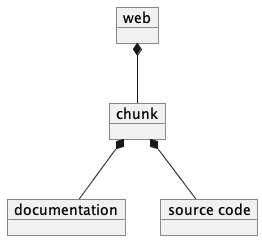
The chunks have the following two overall sets of features:
Program source code to be tangled and woven. There are two important varieties:
“defined” chunks that have names,
“output” chunks that lead to writing a tangled file.
Output chunks can have references to defined code chunks defined anywhere else in the web file. This permits tangling output files in a compiler-friendly order, separate from a sensible presentation order.
Documentation to be woven. These are the blocks of text between commands.
The bulk of the file is typically documentation chunks that describe the program in some publication-oriented markup language like RST, HTML, or LaTeX.
All code chunks have two transformations applied:
When Tangling, the indentation is adjusted to match the context in which they were originally defined. This assures that Python (which relies on indentation) parses correctly. For other languages, proper indentation is expected but not required.
When Weaving, selected characters can be quoted so they don’t break the publication tool. For HTML,
&,<,>are quoted properly. For LaTeX, a few escapes are used to avoid problems with thefancyvrbenvironment.
The non-code documentation chunks are not transformed up in any way. Everything that’s not explicitly a code chunk is output without modification.
All of the py-web-lp tags begin with @.
This is sometimes called the command prefix.
(This can be changed.)
The tags were historically referred to as “commands.”
For Python code using decorators, the symbol must be doubled, @@, because all @ symbols are commands, irrespective of context.
The Structural tags (historically called “major commands”) partition the input and define the various chunks. The Inline tags are (called “minor commands”) are used to control the woven and tangled output from the defined chunks. There are Content tags which generate summary cross-reference content in woven files.
Boilerplate¶
There is some mandatory “boilerplate” required to make a working document. Requirements vary by markup language.
LaTeX¶
The LaTeX templates use \\fancyvrb.
The following is required.
\\usepackage{fancyvrb}
Some minimal boilerplate document looks like this:
\documentclass{article}
\usepackage{fancyvrb}
\title{ Title }
\author{ Author }
\begin{document}
\maketitle
\tableofcontents
Your Document Starts Here
\end{document}
HTML¶
There’s often a fairly large amount of HTML boilerplate. Currently, the templates used do not provide any CSS classes. For more sophisticated HTML documents, it may be necessary to provide customized templates with CSS classes to make the document look good.
Additional Features¶
Sequence Numbers. The named chunks (from both @o and @d commands) are assigned
unique sequence numbers to simplify cross references.
Case Sensitive. Chunk names and file names are case sensitive.
Abbreviations. Chunk names can be abbreviated.
A partial name can have a trailing ellipsis (...), this will be resolved to the full name.
The most typical use for this is shown in the following example:
Some RST-format documentation.
@o myFile.py
@{
@<imports of the various packages used@>
print(math.pi,time.time())
@}
Some notes on the packages used.
@d imports...
@{
import math,time
@| math time
@}
Some more RST-format documentation.
This example shows five chunks.
An anonymous chunk of documentation.
A named chunk that tangles the
myFile.pyoutput. It has a reference to theimports of the various packages usedchunk. Note that the full name of the chunk is essentially a line of documentation, traditionally done as a comment line in a non-literate programming environment.An anonymous chunk of documentation.
A named chunk with an abbreviated name. The
imports...reference matches the defined nameimports of the various packages used. Set off after the@|separator is the list of user-specified identifiers defined in this chunk.An anonymous chunk of documentation.
Note that the first time a name appears (in a reference or definition), it must be the full name. All subsequent uses can be elisions. Also not that ambiguous elision is an annoying problem when you first start creating a document.
Concatenation. Named chunks are concatenated from their various pieces. This allows a named chunk to be broken into several pieces, simplifying the description. This is most often used when producing fairly complex output files.
An anonymous chunk with some RST documentation.
@o myFile.py
@{
import math, time
@}
Some notes on the packages used.
@o myFile.py
@{
print(math.pi, time.time())
@}
Some more HTML documentation.
This example shows five chunks.
An anonymous chunk of documentation.
A named chunk that tangles the
myFile.pyoutput. It has the first part of the file. In the woven document this is marked with"=".An anonymous chunk of documentation.
A named chunk that also tangles the
myFile.pyoutput. This chunk’s content is appended to the first chunk. In the woven document this is marked with"+=".An anonymous chunk of documentation.
Newline Preservation. Newline characters are preserved on input. Because of this the output may appear to have excessive newlines. In all of the above examples, each named chunk was defined with the following.
@{
import math, time
@}
This puts a newline character before and after the import line.
Controlling Indentation¶
We have two choices in indentation:
Context-Sensitive.
Consistent.
If we have context-sensitive indentation, then the indentation of a chunk reference is applied to the entire chunk when expanded in place of the reference. This makes it simpler to prepare source for languages (like Python) where indentation is important.
There are cases, however, when this is not desirable. There are some places in Python where we want to create long, triple-quoted strings with indentation that does not follow the prevailing indentations of the surrounding code.
Here’s how the context-sensitive indentation works.
@o myFile.py
@{
def aFunction(a, b):
@<body of aFunction@>
@| aFunction @}
@d body...
@{
"""doc string"""
return a + b
@}
The @<body of aFunction@> command is indented.
The tangled output from this will look like the following.
All of the newline characters are preserved, and the reference to body of the aFunction is indented to match the prevailing indent where it was referenced.
In the following example, explicit line markers of ~ are provided to make the blank lines more obvious.
~
~def aFunction(a, b):
~
~ """doc string"""
~ return a + b
~
[The @| command shows that this chunk defines the identifier aFunction.]
This leads to the use of “options” for some commands. This seems to go against the utter simplicity we’re cribbing from noweb.
The syntax to define a section the will not the indentation context applied looks like this:
@d -noindent some chunk name
@{First partial line
More that uses """
@}
We might reference such a section like this.
@d some bigger chunk...
@{code
@<some chunk name@>
@}
The -noindent section will be included by resetting the contextual indentation to zero.
The First partial line line will be output after the four spaces
provided by the some bigger chunk context.
After the first newline, the remaining lines will be at the left margin.
Tracking Source Line Numbers¶
Since the tangled output files are – well – tangled, it can be difficult to
trace back from a Python error stack to the original line in the .w file that
needs to be fixed.
To facilitate this, there is a two-step operation to get more detailed information
on how tangling worked.
Use the
-ncommand-line option to include line numbers in the tangled output.Include comment indicators on the
@ocommands to show what comment syntax is used.
The expanded syntax for @o looks like this.
@o -start /* -end */ page-layout.css
@{
Some CSS code
@}
We’ve added two options: -start /* and -end */ to define comment start and end syntax.
This will lead to comments embedded in the tangled output to show source line numbers for every (every!) chunk.
Expression Context¶
Expressions are evaluated as they are encountered during input parsing.
They produce a TextCommand in the current Chunk.
This means a limited context is available for the Python expression.
The context has the following variables defined.
- os.path:
This is the standard
os.pathmodule.- os.getcwd:
The complete
osmodule is not available. Just this function.- datetime:
This is the standard
datetimemodule.- time:
The standard
timemodule.- platform:
This is the standard
platformmodule.- __builtins__:
Most of the built-ins are available, too. Not all.
exec(),eval(),open()and__import__()aren’t available.- theLocation:
A tuple with the file name, first line number and last line number for the original expression’s location.
- theWebReader:
The
WebReaderinstance doing the parsing.- theFile:
The
.wfile being processed.- thisApplication:
The name of the running py-web-lp application. It may not be pyweb.py, if some other script is being used.
- __version__:
The version string in the py-web-lp application.
Architecture and Design Overview¶
This application breaks the overall problem of literate programming into the following sub-problems:
Representation of the WEB document as Chunks and Commands
Reading and parsing the input WEB document.
Weaving a document file.
Tangling the desired program source files.
Here’s the overall Context Diagram for this application:
![left to right direction
skinparam actorStyle awesome
actor "Developer" as Dev
rectangle PyWeb {
usecase "Tangle Source" as UC_Tangle
usecase "Weave Document" as UC_Weave
}
rectangle IDE {
usecase "Create WEB" as UC_Create
usecase "Run Tests" as UC_Test
usecase "Build Documentation" as UC_Doc
usecase "Build Application" as UC_App
}
database WEB
component App
folder Documentation
Dev --> UC_Create
Dev --> UC_Test
Dev --> UC_Doc
Dev --> UC_App
UC_Create --> WEB
WEB --> UC_Tangle
WEB --> UC_Weave
UC_Tangle --> App
UC_Weave --> Documentation
UC_Test ..> UC_Tangle
UC_Doc ..> UC_Weave
UC_App ..> UC_Tangle](_images/plantuml-4c8ed7c9fa80955420fb7e1d1a646a6dca37f7fd.png)
The idea here is a central WEB document contains both the application source code and the documentation that describes the code. The documentation can present information in an order that’s meaningful and helpful to people. The tangling operation orders information for the benefit of compilers and tools.
Since this is often part of an Integrated Development Environment (IDE), the container for all of these software components is the developer’s desktop. (We don’t need a diagram for that.)
Here’s a summary of the application-level components. These are the most visible libraries and command-line applications:
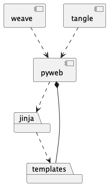
The weave and tangle are convenient scripts that import and customize the underlying pyweb application.
We’ve used the dotted “depends-on” arrow to depict this.
The pyweb application depends on Jinja2 to define the various templates for weaving the output documents.
The pyweb application contains the templates; this is shown with a solid line.
We can modify the templates to alter the look and feel.
The supplied weave.py script shows how to do this.
In many cases, the final production will multiple steps, as shown below:
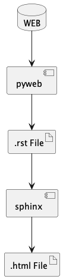
We can use pyweb-lp to create an .rst file with the documentation.
This is then processed by Sphinx to inject a Sphinx theme and necessary CSS to make
responsive web document(s).
This is often automated with a Makefile.
Overall Structure¶
Generally, the code breaks into three functional areas
The core representation of a WEB.
A parser to read the source WEB.
The emitters to produce woven and tangled output. This includes both weavers and tanglers.
We could depict it as follows:
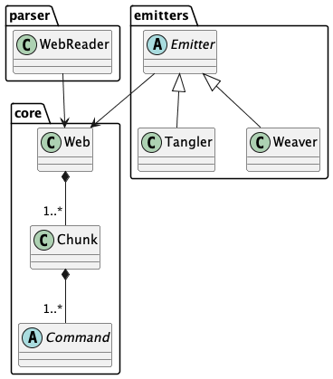
We’ll look at the core model, first.
Core WEB Representation¶
The basic structure has three layers, as shown in the following diagram:
![class Web << dataclass >> {
chunks: list[Chunk]
}
class Chunk {
name: str
commands: list[Command]
}
abstract class Command
Web *-- "1..*" Chunk
Chunk *-- "1..*" Command
class CodeChunk
Chunk <|-- CodeChunk
class NamedChunk
Chunk <|-- NamedChunk
class OutputChunk
Chunk <|-- OutputChunk
class NamedCodeChunk
Chunk <|-- NamedCodeChunk
class TextCommand
Command <|-- TextCommand
class CodeCommand
Command <|-- CodeCommand
class ReferenceCommand
Command <|-- ReferenceCommand
class XRefCommand
Command <|-- XRefCommand
class FileXRefCommand
XRefCommand <|-- FileXRefCommand
class MacroXRefCommand
XRefCommand <|-- MacroXRefCommand
class UseridXRefCommand
XRefCommand <|-- UseridXRefCommand](_images/plantuml-af6c5e3c3b745092f6451b2df5c1ecb6ef57c635.png)
The source document is transformed into a Web, which is the overall container.
The source is decomposed into a sequence of Chunk instances.
Each Chunk is a sequence of Commands.
Chunk objects and Command objects cannot be nested, leading to delightful simplification.
The overall Web includes both the original sequence of Chunk objects as well as an index for the named Chunk instances.
Note that a named chunk may be created through a number of @d commands.
This means that each named Chunk may be a sequence of definitions sharing a common name.
They are concatenated in order to permit decomposing a single concept into sequentially described pieces.
The various layers of Web, Chunk, and Command each have attributes designed to be usable by a Jinja template when weaving output.
When tangling, however, the only attribute that matters is the text contained in the @{ and @} brackets.
This makes tangling somewhat simpler than weaving.
There is a small interaction between a Tangler and each Chunk to work out the indentation. based in the context in which a @< name @> reference occurs.
Reading and Parsing¶
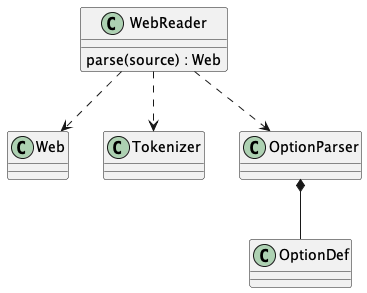
A solution to the reading and parsing problem depends on a convenient tool for breaking up the input stream and a representation for the chunks of input and the sequence of commands. Input decomposition is done with something we might call the Splitter design pattern.
The Splitter pattern is widely used in text processing, and has a long legacy in a variety of languages and libraries. A Splitter decomposes a string into a sequence of strings using some split pattern. There are many variant implementations. For example, one variant locates only a single occurence (usually the left-most); this is commonly implemented as a Find or Search string function. Another variant locates all occurrences of a specific string or character, and discards the matching string or character.
The variation on Splitter in this application creates each element in the resulting sequence as either (1) an instance of the split regular expression or (2) the text between split patterns.
We define our splitting pattern with the regular
expression '@.|\n'. This will split on either of these patterns:
@followed by a single character,or, a newline.
For the most part, \n is only text, and as almost no special significance.
The exception is the @i filename command, which ends at the end of the line, making the \n significant syntax in this case.
We could be more specific with the following as a split pattern: '@[doOifmu\|<>(){}\[\]]|\n'.
This would silently ignore unknown commands, merging them in with the surrounding text.
This would leave the '@@' sequences completely alone, allowing us to replace '@@' with '@' in every text chunk.
It’s not clear this additional level of detail is helpful.
Within the @d and @o commands, there is a name and options.
These follow the syntax rules for Tcl or the shell.
Optional fields are prefaced with -.
All options must come before all positional arguments.
The positional arguments provide the name being defined.
In effect, the name is ' '.join(args.split(' ');
this means multiple adjacent spaces in a name will be collapsed to a single space.
Emitters¶
There are two possible outputs from this application:
A woven document.
One or more tangled source files.
The overall structure of the classes is shown in the following diagram.
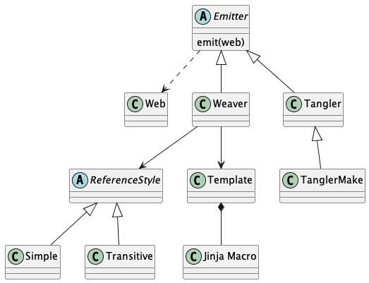
We’ll look at the weaving activity first, then the tangling activity.
Weaving¶
The weaving activity depends on having a target document markup language. There are several approaches to this problem.
We can use a markup language unique to py-web-lp. This would hide the final target markup language. It would mean that py-web-lp would be equivalent to a tool like Pandoc, producing a variety of target markup languages from a single, common source.
We can use any of the existing markup languages (HTML, RST, Markdown, LaTeX, etc.) expand snippets of markup into author-supplied markup to create the target woven document.
The problem with the first method is defining yet-another-markup-language. This seems needlessly complex.
The problem with the second method is the source WEB file is a mixture of the following two things:
The background document in some standard markup and
The code elements, which need to be wrapped in some markup.
In languages like RST and Markdown, there’s a small textual wrapper around code samples. In languages like HTML, the wrapper can be much more complex. Also, certain code characters may need to be properly escaped if the code sample happens to contain markup that should not be processed, but treated as literal text. In LaTeX, the wrapper can be quite complex.
The author should not be foreced to repeat the wrappers around each code examples. This should be delegated to the literate programming tool. Further, the author should not be narrowly constrained by the markup injected by the weaving process; the weaver should be extensible to add features.
Currently, this leads to using the Facade design pattern. The weaver is a Facade over the Jinja template engine. The tool provides default templates in RST, HTML, and LaTeX. These can be replaced; new templates can be added. The templates used to wrap code sections can be tweaked relatively easily.
This is – in the long run – unsustainable.
It means some elements of the document are not in the .w WEB file.
See the To Do section for more on these new commands.
Tangling¶
The tangling activity produces output files. In other Literate Programming tools, some care was taken to understand the source code context for tangling, and provide a correct indentation. This required a command-line parameter to turn off indentation for languages like Fortran, where identation is not used.
In py-web-lp, there are two options:
The default behavior is that the indent of a
@< name @>command is used to set the indent of the material is expanded in place of this reference. If all@<commands are presented at the left margin, no indentation will be done. This is helpful simplification, particularly for users of Python, where indentation is significant.A flag on a
@dchunk can override the indentation rule to force the material to be placed at the left margin in spite of the @<` command being indented.
Generally, tangling collects the @o chunks and referenced @d chunks into files.
The @< references are expanded.
Other than indentation control, no additional transformation is performed.
Application¶
The overall application has the following layers to it:
An
Actionclass hierarchy that includes the actions of Load, Tangle, and Weave.An overall
Applicationclass that executes the actions.A top-level main function parses the command line, creates and configures the actions, and executes the sequence of actions.
The idea is that the Weaver Action should be visible to tools like PyInvoke.
We want Weave("someFile.w") to be a sensible task.
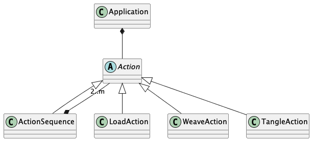
This shows the essential structure of the top-level classes.
Implementation¶
The implementation is contained in a single Python module defining the all of the classes and functions, as well as an overall main() function.
The main() function uses these base classes to weave and tangle the output files.
The broad outline of the presentation is as follows:
Base Classes that define a model for the
.wfile.Web Class contains the overall Web of Chunks. A Web is a sequence of Chunk objects. It’s also a mapping from chunk name to definition.
Chunk Class Hierarchy are pieces of the source document, built into a Web. A
Chunkis a collection ofCommandinstances. This can be either an anonymous chunk that will be sent directly to the output, or a named chunks delimited by the structural@dor@ocommands.Command Class Hierarchy are the items within a
Chunk. The text and the inline@<name@>references are the principle command classes. Additionally, there are some cross reference commands (@f,@m, and@u) that generate content.
Output Serialization. The
Emitterclass hierarchy writes various kinds of files. These decompose into two subclasses:A
Tanglercreates source code.A
Weavercreates documentation. The various Jinja-based templates are part of weaving.
Input Parsing covers deserialization from the source
.wfile to the base model ofWeb,Chunk, andCommand.The WebReader class which parses the Web structure.
The Tokenizer class which tokenizes the raw input.
Other application components:
Error Class defines an application-specific exception. This covers all of the various kinds of problems that might arise.
Action class hierarchy defines things this program does.
The Application class. This is an overall class definition that includes command line parsing, picking an Action, configuring and executing the Action. It could be a set of related functions, but we’ve bound them into a class.
Logging setup. This includes a simple context manager for logging.
pyWeb Module File defines the final module file that contains the application.
We’ll start with the base classes that define the data model for the source WEB of chunks.
Base Classes¶
Here are some of the base classes that define the structure and meaning of a .w source file.
Base Class Definitions (1) =
→ `Command class hierarchy -- used to describe individual commands in a chunk (10)`_
→ `Chunk class hierarchy -- used to describe individual chunks (8)`_
→ `Web class -- describes the overall "web" of chunks (3)`_
∎ Base Class Definitions (1). Used by → pyweb.py (80).
The above order is reasonably helpful for Python and minimizes forward references.
The Chunk, Command, and Web instances do have a circular relationship, making a strict ordering a bit complex.
We’ll start at the central collection of information, the Web class of objects.
Web Class¶
The overall web of chunks is contained in a single instance of the Web class.
This is the principle parameter for the weaving and tangling actions.
Broadly, the functionality of a Web can be separated into the following areas:
It is constructed by a
WebReader.It also supports “enrichment” of the web, once all the
Chunkinstances are known. This is a stateful update to the web. EachChunkis updated with references it makes as well as references to it.It supports
Chunkcross-reference methods that traverse this enriched data. This includes a kind of validity check to be sure that everything is used once and once only.
Fundamentally, a Web is a hybrid list+mapping. It as the following features:
It’s a
Sequenceto retain allChunkinstances in order.It’s a mapping of name-to-Chunk that also offers a moderately sophisticated lookup, including exact match for a
Chunkname and an approximate match for an abbreviated name.
The Web is built by the parser by loading the sequence of Chunk instances.
Note that the WEB source language has a “mixed content model”. This means the code chunks have specific tags with names. The text, on the other hand, is interspersed among the code chunks. The text belongs to implicit, unnamed text chunks.
A web instance has a number of attributes.
- chunks:
the sequence of
Chunkinstances as seen in the input file. To support anonymous chunks, and to assure that the original input document order is preserved, we keep all chunks in a master sequential list.- files:
the
@onamedOutputChunkchunks. Each element of this dictionary is a sequence of chunks that have the same name. The first is the initial definition (marked with “=”), all others a second definitions (marked with “+=”).- macros:
the
@dnamedNamedChunkchunks. Each element of this dictionary is a sequence of chunks that have the same name. The first is the initial definition (marked with “=”), all others a second definitions (marked with “+=”).- userids:
the cross reference of chunks referenced by commands in other chunks.
This relies on the way a @dataclass does post-init processing.
One the raw sequence of Chunks has been presented, some additional processing is done to link each Chunk to the web.
This permits the full_name property to expand abbreviated names to full names,
and, consequently, chunk references.
Imports (2) =
from collections import defaultdict
from collections.abc import Iterator
from dataclasses import dataclass, field
from functools import cache
import logging
from pathlib import Path
from types import SimpleNamespace
from typing import Any, Literal, ClassVar
from weakref import ref, ReferenceType
∎ Imports (2). Used by → pyweb.py (80).
The class defines one visible element of a Web instance, the chunks list of Chunk instances.
From this list of Chunk objects, the remaining internal objects are built.
These include the following:
chunk_maphas the mapping of chunk names to list of chunks that provide the definition for the chunk.userid_maphas the mapping of user-defined names to the list of chunks that define the name.referencesis the set of all referenced chunks.
Additionally there are attributes to contain a logger, a reference to the WEB file path, used to evaluate expressions, and a “strict-match” option that can report errors during name resolution. Disabling strict-match will allow documents to be tangled that are potentially incomplete.
Generally, a parser will create a list of Chunk objects.
From this, the parser can create the final Web.
Web class – describes the overall “web” of chunks (3) =
@dataclass
class Web:
chunks: list["Chunk"] #: The source sequence of chunks.
# The ``@d`` chunk names and locations where they're defined.
chunk_map: dict[str, list["Chunk"]] = field(init=False)
# The ``@|`` defined names and chunks with which they're associated.
userid_map: defaultdict[str, list["Chunk"]] = field(init=False)
logger: logging.Logger = field(init=False, default=logging.getLogger("Web"))
web_path: Path = field(init=False) #: Source WEB file; set by ```WebParse``
strict_match: ClassVar[bool] = True #: Report ... names without a definition.
∎ Web class – describes the overall “web” of chunks (3). Used by → Base Class Definitions (1).
The __post_init__() special method populates the detailed structure of the WEB document.
There are several passes through the WEB to digest the data:
Set all
ChunkandCommandback references to theWebcontainer. This is required so aChunkwith aReferenceCommandinstance can properly refer to a chunk elsewhere in theWebcontainer. There are all weak references to faciliate garbgage collection.Locate the unabbreviated names in chunks and references to chunks. Names can found in two places: the
@dcommand provides a name, and a@<name@>command provides a reference to a name. The unabbreviated names define the structure. Unambiguous abbreviations can be used freely, since full names are located first.Accumulate chunk lists, output lists, and name definition lists. This pass does two things. First any user-defined name after a
@|command is accumulated. Second, any abbreviated name is resolved to the full name, and the complete mapping from chunk name to a sequence of defining chunks is completed.Set the
referencedByattribute of aChunkinstance with all of the commands that point to it. The idea here is that a top-levelChunkinstance may have references to otherChunkisntances. This forms a kind of tree. Any given low-levelChunkobject is named by a sequence of parentChunkobjects.
Once the initialization is complete, the Web instance can be woven or tangled.
Web class – describes the overall “web” of chunks (4) +=
def __post_init__(self) -> None:
"""
Populate weak references throughout the web to make full_name properties work.
Then. Locate all macro definitions and userid references.
"""
# Pass 1 -- set all Chunk and Command back references.
for c in self.chunks:
c.web = ref(self)
for cmd in c.commands:
cmd.web = ref(self)
# Named Chunks = Union of macro_iter and file_iter
named_chunks = list(filter(lambda c: c.name is not None, self.chunks))
# Pass 2 -- locate the unabbreviated names in chunks and references to chunks.
self.chunk_map = {}
for seq, c in enumerate(named_chunks, start=1):
c.seq = seq
if not c.path:
# Use ``@d name`` chunks (reject ``@o`` and text)
if c.name and not c.name.endswith('...'):
self.logger.debug(f"__post_init__ 2a {c.name=!r}")
self.chunk_map.setdefault(c.name, [])
for cmd in c.commands:
# Find ``@< name @>`` in ``@d name`` chunks or ``@o`` chunks
if cmd.has_name:
if not cast(ReferenceCommand, cmd).name.endswith('...'):
self.logger.debug(f"__post_init__ 2b {cast(ReferenceCommand, cmd).name=!r}")
self.chunk_map.setdefault(cast(ReferenceCommand, cmd).name, [])
# Pass 3 -- accumulate chunk lists, output lists, and name definition lists.
self.userid_map = defaultdict(list)
for c in named_chunks:
for name in c.def_names:
self.userid_map[name].append(c)
if not c.path:
# Named ``@d name`` chunks
if full_name := c.full_name:
c.initial = len(self.chunk_map[full_name]) == 0
self.chunk_map[full_name].append(c)
self.logger.debug(f"__post_init__ 3 {c.name=!r} -> {c.full_name=!r}")
else:
# Output ``@o`` and anonymous chunks.
# Assume all @o chunks are unique. If they're not, they overwrite each other.
# Also, there's not ``full_name`` for these chunks.
c.initial = True
# TODO: Accumulate all chunks that contribute to a named file...
# Pass 4 -- set referencedBy a command in a chunk.
# ONLY set this in references embedded in named chunk or output chunk.
# In a generic Chunk (which is text) there's no anchor to refer to.
# NOTE: Assume single references *only*
# We should raise an exception when updating a non-None referencedBy value.
# Or incrementing ref_chunk.references > 1.
for c in named_chunks:
for cmd in c.commands:
if cmd.has_name:
ref_to_list = self.resolve_chunk(cast(ReferenceCommand, cmd).name)
for ref_chunk in ref_to_list:
ref_chunk.referencedBy = c
ref_chunk.references += 1
∎ Web class – describes the overall “web” of chunks (4). Used by → Base Class Definitions (1).
The representation of a Web instance is a sequence of Chunk instances.
This can be long and difficult to read.
It is, however, complete, and can be used to build instances of Web objects from a variety of sources.
Web class – describes the overall “web” of chunks (5) +=
def __repr__(self) -> str:
NL = ",\n"
return (
f"{self.__class__.__name__}("
f"{NL.join(repr(c) for c in self.chunks)}"
f")"
)
∎ Web class – describes the overall “web” of chunks (5). Used by → Base Class Definitions (1).
Name and Chunk resolution are similar. Name resolution provides only the expanded name. Chunk resolution provides the list of chunks that define a name. Chunk resolution expands on the basic features of Name resolution.
The complex target.endswith('...') processing only happens once during __post_init__() processing.
After the initalization is complete, all ReferenceCommand objects will have a full_name attribute that avoids the complication of resolving a name with a ... ellipsis.
Web class – describes the overall “web” of chunks (6) +=
def resolve_name(self, target: str) -> str:
"""Map short names to full names, if possible."""
if target in self.chunk_map:
# self.logger.debug(f"resolve_name {target=} in self.chunk_map")
return target
elif target.endswith('...'):
# The ... is equivalent to regular expression .*
matches = list(
c_name
for c_name in self.chunk_map
if c_name.startswith(target[:-3])
)
# self.logger.debug(f"resolve_name {target=} {matches=} in self.chunk_map")
match matches:
case []:
if self.strict_match:
raise Error(f"No full name for {target!r}")
else:
self.logger.warning(f"resolve_name {target=} unknown")
self.chunk_map[target] = []
return target
case [head]:
return head
case [head, *tail]:
message = f"Ambiguous abbreviation {target!r}, matches {[head] + tail!r}"
raise Error(message)
raise RuntimeError(f"unexpected {matches}")
else:
self.logger.warning(f"resolve_name {target=} unknown")
self.chunk_map[target] = []
return target
def resolve_chunk(self, target: str) -> list["Chunk"]:
"""Map name (short or full) to the defining sequence of chunks."""
full_name = self.resolve_name(target)
chunk_list = self.chunk_map[full_name]
self.logger.debug(f"resolve_chunk {target=!r} -> {full_name=!r} -> {chunk_list=}")
return chunk_list
∎ Web class – describes the overall “web” of chunks (6). Used by → Base Class Definitions (1).
The point of the Web object is to be able to manage a variety of structures.
These iterator methods and properties provide the list of @o chunks, @d chunks, and the usernames after @| in a chunk.
Additionally, we can confirm the overall structure by asserting that each @d name has one reference.
A name with no references indicates an omission, a name with multiple references suggests a spelling or ellipsis problem.
Web class – describes the overall “web” of chunks (7) +=
def file_iter(self) -> Iterator[OutputChunk]:
return (cast(OutputChunk, c) for c in self.chunks if c.type_is("OutputChunk"))
def macro_iter(self) -> Iterator[NamedChunk]:
return (cast(NamedChunk, c) for c in self.chunks if c.type_is("NamedChunk"))
def userid_iter(self) -> Iterator[SimpleNamespace]:
yield from (SimpleNamespace(def_name=n, chunk=c) for c in self.file_iter() for n in c.def_names)
yield from (SimpleNamespace(def_name=n, chunk=c) for c in self.macro_iter() for n in c.def_names)
@property
def files(self) -> list["OutputChunk"]:
return list(self.file_iter())
@property
def macros(self) -> list[SimpleNamespace]:
"""
The chunk_map has the list of Chunks that comprise a macro definition.
We separate those to make it slightly easier to format the first definition.
"""
first_list = (
(self.chunk_map[name][0], self.chunk_map[name])
for name in sorted(self.chunk_map)
if self.chunk_map[name]
)
macro_list = list(
SimpleNamespace(name=first_def.name, full_name=first_def.full_name, seq=first_def.seq, def_list=def_list)
for first_def, def_list in first_list
)
# self.logger.debug(f"macros: {defs}")
return macro_list
@property
def userids(self) -> list[SimpleNamespace]:
userid_list = list(
SimpleNamespace(userid=userid, ref_list=self.userid_map[userid])
for userid in sorted(self.userid_map)
)
# self.logger.debug(f"userids: {userid_list}")
return userid_list
def no_reference(self) -> list[Chunk]:
return list(filter(lambda c: c.name and not c.path and c.references == 0, self.chunks))
def multi_reference(self) -> list[Chunk]:
return list(filter(lambda c: c.name and not c.path and c.references > 1, self.chunks))
∎ Web class – describes the overall “web” of chunks (7). Used by → Base Class Definitions (1).
A Web instance is built by a WebReader.
It’s used by an Emitter, including a Weaver as well as a Tangler.
A Web is composed of individual Chunk instances.
Chunk Class Hierarchy¶
A Chunk is a piece of the input file.
It is a collection of Command instances.
A Chunk can be woven or tangled to create output.
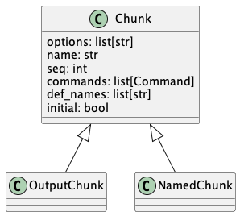
These subclasss reflect three kinds of content in the WEB source document:
Chunkis the anonymous text context.Text in the body generally becomes a
TextCommand. Also, the various XREF commands (@m,@f,@u) can only appear here. In principle, a@< reference @>can appear in text. It must name a@d name @[...@]NamedDocumentChunk, which is expanded in place, not linked.
OutputChunkis the@ocontext.Text in the body becomes a
CodeCommand. Any@< reference @>will be expanded when tangling, but become a link when weaving. This defines an output file.
NamedChunkis the@dcontext.Text in the body becomes a
CodeCommand. Any@< reference @>will be expanded when tangling, but become a link when weaving.
Most of the attributes are pushed up to the base class. This makes type checking the complex WEB tree simpler.
The attributes are visible to the Jinja templates.
In particular the sequence number, seq, and the initial definition indicator, initial, are often used to customize presentation of the woven content.
A type_is() method is used to discern the various subtypes.
This slightly simplifies the work done by a template.
It’s not easy to rely on proper inheritance because the templates are implemented in a separate language with their own processing rules.
Chunk class hierarchy – used to describe individual chunks (8) =
@dataclass
class Chunk:
"""Base class for OutputChunk, NamedChunk, NamedDocumentChunk.
"""
#: Parsed options for @d and @o chunks; used by __post_init__() to set other attributes.
options: list[str] = field(default_factory=list)
#: Short name of the chunk.
name: str | None = None
#: Unique sequence number of chunk in the WEB.
seq: int | None = None
#: Sequence of commands inside this chunk.
commands: list["Command"] = field(default_factory=list)
#: Names defined after ``@|`` in this chunk.
def_names: list[str] = field(default_factory=list)
#: Is this the first use of a given Chunk name?
initial: bool = False
#: If injecting location details when tangling, this is the comment prefix.
comment_start: str | None = None
#: If injecting location details, this is the comment suffix.
comment_end: str | None = None
#: When weaving, set weave=False to skip this.
weave: bool = True
#: When weaving, this is a style to use.
style: str | None = None
#: Count of references to this Chunk.
references: int = field(init=False, default=0)
#: The immediate reference to this chunk.
referencedBy: "Chunk | None" = field(init=False, default=None)
#: Weak reference to the ``Web`` containing this ``Chunk``.
web: ReferenceType["Web"] | None = field(init=False, repr=False, default=None)
#: Logger for any chunk-specific messages.
logger: logging.Logger = field(init=False, default=logging.getLogger("Chunk"))
#: Indentation Rule; None means indent; number is the amount to indent.
indent: None | int = None
def __post_init__(self) -> None:
"""Parse options."""
if self.options:
self.logger.warning("attempt to create %s with options %r", self.__class__.__name__, self.options)
@property
def full_name(self) -> str | None:
if self.web is None:
raise ValueError("no web assigned to chunk {self!s}")
if self.name:
return cast(Web, self.web()).resolve_name(self.name)
else:
return None
@property
def path(self) -> Path | None:
return None
@property
def location(self) -> tuple[str, int]:
return self.commands[0].location
@property
def transitive_referencedBy(self) -> list["Chunk"]:
if self.referencedBy:
return [self.referencedBy] + self.referencedBy.transitive_referencedBy
else:
return []
def add_text(self, text: str, location: tuple[str, int]) -> "Chunk":
if self.commands and self.commands[-1].typeid.TextCommand:
cast(HasText, self.commands[-1]).text += text
else:
# Empty list OR previous command was not ``TextCommand``
self.commands.append(TextCommand(text, location))
return self
def type_is(self, name: str) -> bool:
"""
Instead of type name matching, we could check for these features:
- has_code() (i.e., NamedChunk and OutputChunk)
- has_text() (i.e., Chunk and NamedDocumentChunk)
Since this is for template rendering, where proper Liskov
Substitution is irrelevant, we match class names.
This can't **easily** use the ``typeid`` metaclass because it's a dataclass.
"""
return self.__class__.__name__ == name
∎ Chunk class hierarchy – used to describe individual chunks (8). Used by → Base Class Definitions (1).
The subclasses do little more than partition the Chunks in a way that permits customization in the template rendering process.
An OutputChunk is distinguished from NamedChunk by having a path property and not having a full_name property.
Chunk class hierarchy – used to describe individual chunks (9) +=
class OutputChunk(Chunk):
"""An output file from an ``@o`` Chunk"""
option_parser: argparse.ArgumentParser | None = None
def __post_init__(self) -> None:
"""Parse options."""
if not self.option_parser:
self.option_parser = argparse.ArgumentParser(add_help=False, exit_on_error=False)
self.option_parser.add_argument("-start", dest='start', type=str, default=None)
self.option_parser.add_argument("-end", dest='end', type=str, default="")
self.option_parser.add_argument("-noweave", dest="weave", action='store_false', default=True)
# All remaining arguments form the chunk name
self.option_parser.add_argument("argument", type=str, nargs="*")
options = self.option_parser.parse_args(self.options)
self.name = ' '.join(options.argument)
self.comment_start = options.start if '-start' in options else "# "
self.comment_end = options.end if '-end' in options else ""
self.weave = options.weave
@property
def path(self) -> Path | None:
if self.name:
return Path(self.name)
else:
return None
@property
def full_name(self) -> str | None:
return None
def add_text(self, text: str, location: tuple[str, int]) -> Chunk:
if self.commands and self.commands[-1].typeid.CodeCommand:
cast(HasText, self.commands[-1]).text += text
else:
# Empty list OR previous command was not ``CodeCommand``
self.commands.append(CodeCommand(text, location))
return self
class NamedChunk(Chunk):
"""
A defined name with code from a ``@d`` Chunk
.. note:: syntex for ``-indent``/``-noindent``.
- ``-indent`` provides None, normal indent
- ``-noindent`` is effectively ``-indent 0``.
"""
option_parser: argparse.ArgumentParser | None = None
def __post_init__(self) -> None:
if not self.option_parser:
self.option_parser = argparse.ArgumentParser(add_help=False, exit_on_error=False)
self.option_parser.add_argument("-style", dest="style", action="store", default=None)
self.option_parser.add_argument("-indent", dest='indent', action='store_const',
const=None, default=None)
self.option_parser.add_argument("-noindent", dest='indent', action='store_const', const=0, default=None)
self.option_parser.add_argument("argument", type=str, nargs="*")
options = self.option_parser.parse_args(self.options)
self.name = ' '.join(options.argument)
if 'noindent' in options and options.noindent:
self.indent = 0
elif 'indent' in options and options.indent:
self.indent = int(options.indent)
self.style = options.style
def add_text(self, text: str, location: tuple[str, int]) -> Chunk:
if self.commands and self.commands[-1].typeid.CodeCommand:
cast(HasText, self.commands[-1]).text += text
else:
# Empty list OR previous command was not ``CodeCommand``
self.commands.append(CodeCommand(text, location))
return self
class NamedDocumentChunk(Chunk):
"""
A defined name with text.
.. todo:: Refactor parse_options to base class
"""
option_parser: argparse.ArgumentParser | None = None
def __post_init__(self) -> None:
if not self.option_parser:
self.option_parser = argparse.ArgumentParser(add_help=False, exit_on_error=False)
self.option_parser.add_argument("-style", action="store", type=str, default=None)
# All remaining arguments form the chunk name
self.option_parser.add_argument("argument", type=str, nargs="*")
options = self.option_parser.parse_args(self.options)
self.name = ' '.join(options.argument)
∎ Chunk class hierarchy – used to describe individual chunks (9). Used by → Base Class Definitions (1).
Command Class Hierarchy¶
A Chunk is a sequence of Command instances.
For the generic Chunk base class, the commands are – mostly – the TextCommand subclass of Command; these are blocks of text.
A Chunk may also include some XRefCommand instances which expand to cross-reference material for an index.
For the CodeChunk and NamedChunk subclasses, the commands are CodeCommand instances intermixed with ReferenceCommand instances.
A CodeCommand has a wrapper applied to it when weaving.
Additionally, it will be tangled into the output.
A ReferenceCommand becomes a link when weaving, and expands to its full body when being tangled.
![class Chunk {
name: str
commands: list[Command]
}
abstract class Command {
{static} has_name: bool
{static} has_text: bool
{static} typeid: TypeId
text: str
tangle(Tangler, Target)
}
Chunk *-- "1..*" Command
abstract HasText
Command <|-- HasText
class TextCommand
HasText <|-- TextCommand
class CodeCommand
HasText <|-- CodeCommand
class ReferenceCommand
Command <|-- ReferenceCommand
abstract XRefCommand
Command <|-- XRefCommand
class FileXRefCommand
XRefCommand <|-- FileXRefCommand
class MacroXRefCommand
XRefCommand <|-- MacroXRefCommand
class UseridXRefCommand
XRefCommand <|-- UseridXRefCommand
class TypeId {
__getattr__(str) : bool
}
Command -- TypeId](_images/plantuml-fae6df9bf8cb355e39c19c6987c8cc7be8d16732.png)
Each of these variants has the possibility of distinct processing when weaving the final document.
The type information must be visibile to the Jinja template processing.
This is done through an instance of the TypeId class attached to each of these classes.
The input stream is broken into individual commands, based on the various @x strings in the file.
There are several subclasses of Command, each used to describe a different command or block of text in the input.
All instances of the Command class are created by the WebReader instance.
In this case, a WebReader can be thought of as a factory for Command instances.
Each Command instance is appended to the sequence of commands that
belong to a Chunk.
This model permits two kinds of serialization:
Weaving a document from the WEB source file. This uses the various attributes of the various subclasses.
Tangling target documents with code. This relies on a
tangle()method in each subclass.
We’ll address the run-time type identification first,
the the definitions of the various Command subclasses.
Command class hierarchy – used to describe individual commands in a chunk (10) =
→ `The TypeId Class -- to help the template engine (12)`_
→ `The Command Abstract Base Class (13)`_
→ `The HasText Type Hint -- used instead of another abstract class (14)`_
→ `The TextCommand Class (15)`_
→ `The CodeCommand Class (16)`_
→ `The ReferenceCommand Class (17)`_
→ `The XrefCommand Subclasses -- files, macros, and user names (18)`_
∎ Command class hierarchy – used to describe individual commands in a chunk (10). Used by → Base Class Definitions (1).
The TypeId Class¶
The TypeId class provides run-time type identification to the Jinja templates.
The idea is object.typeid.AClass is equivalent to isinstance(object, pyweb.AClass).
It has simpler syntax and works better with Jinja templates.
It helps sort out the various nodes of the AST built from the source WEB document.
There are three parts to the TypeId implementation:
A
TypeIdclass definition to handle the attribute access. A reference toobject.typeid.Nameevaluates__getattr__(object, 'Name').A metaclass definition,
TypeIdMeta, to inject the newtypeidattribute into each class.The normal class initialization process, which evaluates
__set_name__()for each attribute of a class that defines the method. This provides the containing class to theTypeIdinstance.
The idea of run-time type identification is – in a way – a failure to properly
define the classes to follow the Liskov Substitution design principle.
This becomes awkwardly complex in the Jinja templates, because the templates exist
outside the class hierarchy.
We rely on the typeid to map classes to macros appropriate to the class.
Imports (11) +=
from typing import TypeVar, Generic
∎ Imports (11). Used by → pyweb.py (80).
The TypeId Class – to help the template engine (12) =
class TypeId:
"""
This makes a given class name into an attribute with a
True value. Any other attribute reference will return False.
>>> class A:
... typeid = TypeId()
>>> a = A()
>>> a.typeid.A
True
>>> a.typeid.B
False
"""
def __set_name__(self, owner: type, name: str) -> "TypeId":
"""Invoked automatically during object construction."""
self.my_class = owner
return self
def __getattr__(self, item: str) -> bool:
return self.my_class.__name__ == item
from collections.abc import Mapping
class TypeIdMeta(type):
"""Inject the ``typeid`` attribute into a class definition."""
@classmethod
def __prepare__(metacls, name: str, bases: tuple[type, ...], **kwds: Any) -> Mapping[str, object]: # type: ignore[override]
return {"typeid": TypeId()}
∎ The TypeId Class – to help the template engine (12). Used by → Command class hierarchy – used to describe individual commands in a chunk (10).
The TypeIdMeta metaclass sets the typeid attribute of each class defined by this metaclass.
The ordinary class preparation automatically invokes the __set_name__() special method to provide details to the attribute.
Once set, any reference to c.typeid.name will be evaluated as __getattr__(c, 'name').
This permits the typeid to compare the name provided by __set_name__() with the name
being inquired about.
The Command Class¶
The Command class is abstract, and describes most of the features of the various subclasses.
The Command Abstract Base Class (13) =
class Command(metaclass=TypeIdMeta):
typeid: TypeId
has_name = False
has_text = False
def __init__(self, location: tuple[str, int]) -> None:
self.location = location #: The (filename, line number)
self.logger = logging.getLogger(self.__class__.__name__)
self.web: ReferenceType["Web"]
self.text: str #: The body of this command
def __repr__(self) -> str:
return f"{self.__class__.__name__}(location={self.location!r})"
@abc.abstractmethod
def tangle(self, aTangler: "Tangler", target: TextIO) -> None:
...
∎ The Command Abstract Base Class (13). Used by → Command class hierarchy – used to describe individual commands in a chunk (10).
The HasText Classes¶
An Annotation summarizes some of the subclass relationships.
The HasText Type Hint – used instead of another abstract class (14) =
type HasText = "CodeCommand | TextCommand"
∎ The HasText Type Hint – used instead of another abstract class (14). Used by → Command class hierarchy – used to describe individual commands in a chunk (10).
We don’t formalize this as proper subclass definitions. We probably should, but it doesn’t seem to add any clarity.
The TextCommand Class¶
The TextCommand class describes all of the text outside the @d and @o chunks.
These are not tangled, and any attempt to do this raises an exception .
The TextCommand Class (15) =
class TextCommand(Command):
"""Text outside any other command."""
has_text = True
def __init__(self, text: str, location: tuple[str, int]) -> None:
super().__init__(location)
self.text = text #: The text
def tangle(self, aTangler: "Tangler", target: TextIO) -> None:
message = f"attempt to tangle a text block {self.location} {shorten(self.text, 32)!r}"
self.logger.error(message)
raise Error(message)
def __repr__(self) -> str:
return f"{self.__class__.__name__}(text={self.text!r}, location={self.location!r})"
∎ The TextCommand Class (15). Used by → Command class hierarchy – used to describe individual commands in a chunk (10).
The CodeCommand Class¶
The CodeCommand class describes the text inside the @d and @o chunks.
These are tangled without change.
The CodeCommand Class (16) =
class CodeCommand(Command):
"""Code inside a ``@o``, or ``@d`` command."""
has_text = True
def __init__(self, text: str, location: tuple[str, int]) -> None:
super().__init__(location)
self.text = text #: The text
def tangle(self, aTangler: "Tangler", target: TextIO) -> None:
self.logger.debug(f"tangle {self.text=!r}")
aTangler.codeBlock(target, self.text)
def __repr__(self) -> str:
return f"{self.__class__.__name__}(text={self.text!r}, location={self.location!r})"
∎ The CodeCommand Class (16). Used by → Command class hierarchy – used to describe individual commands in a chunk (10).
The ReferenceCommand Class¶
The ReferenceCommand class describes a @< name @> construct inside a chunk.
When tangled, these lead to inserting the referenced chunk’s content.
Because this a reference to another chunk, the properties provide the values for the other chunk.
The ReferenceCommand Class (17) =
class ReferenceCommand(Command):
"""
Reference to a ``NamedChunk`` in code, a ``@< name @>`` construct.
In a CodeChunk or OutputChunk, it tangles to the definition from a ``NamedChunk``.
In text, it can weave to the text of a ``NamedDocumentChunk``.
"""
has_name = True
def __init__(self, name: str, location: tuple[str, int]) -> None:
super().__init__(location)
self.name = name #: The name that is referenced.
@property
def full_name(self) -> str:
return cast(Web, self.web()).resolve_name(self.name)
@property
def seq(self) -> int | None:
return cast(Web, self.web()).resolve_chunk(self.name)[0].seq
def tangle(self, aTangler: "Tangler", target: TextIO) -> None:
"""Expand this reference.
The starting position is the indentation for all **subsequent** lines.
Provide the indent before ``@<``, in ``tangler.fragment`` back to the tangler.
"""
self.logger.debug(f"tangle reference to {self.name=}, context: {aTangler.fragment=}")
chunk_list = cast(Web, self.web()).resolve_chunk(self.name)
if len(chunk_list) == 0:
message = f"Attempt to tangle an undefined Chunk, {self.name!r}"
self.logger.error(message)
raise Error(message)
aTangler.reference_names.add(self.name)
aTangler.addIndent(len(aTangler.fragment))
aTangler.fragment = ""
for chunk in chunk_list:
# TODO: if chunk.indent is not None: do a setIndent before tangling.
for command in chunk.commands:
command.tangle(aTangler, target)
aTangler.clrIndent()
def __repr__(self) -> str:
return f"{self.__class__.__name__}(name={self.name!r}, location={self.location!r})"
∎ The ReferenceCommand Class (17). Used by → Command class hierarchy – used to describe individual commands in a chunk (10).
The XrefCommand Classes¶
The XRefCommand classes describes a @f, @m, and @u constructs inside a chunk.
These are not Tangled; they’re only woven.
Each offers a unique property that can be used by the template rending to get data about the WEB content.
The XrefCommand Subclasses – files, macros, and user names (18) =
class FileXrefCommand(Command):
"""The ``@f`` command."""
def __init__(self, location: tuple[str, int]) -> None:
super().__init__(location)
@property
def files(self) -> list["OutputChunk"]:
return cast(Web, self.web()).files
def tangle(self, aTangler: "Tangler", target: TextIO) -> None:
raise Error('Illegal tangling of a cross reference command.')
class MacroXrefCommand(Command):
"""The ``@m`` command."""
def __init__(self, location: tuple[str, int]) -> None:
super().__init__(location)
@property
def macros(self) -> list[SimpleNamespace]:
return cast(Web, self.web()).macros
def tangle(self, aTangler: "Tangler", target: TextIO) -> None:
raise Error('Illegal tangling of a cross reference command.')
class UserIdXrefCommand(Command):
"""The ``@u`` command."""
def __init__(self, location: tuple[str, int]) -> None:
super().__init__(location)
@property
def userids(self) -> list[SimpleNamespace]:
return cast(Web, self.web()).userids
def tangle(self, aTangler: "Tangler", target: TextIO) -> None:
raise Error('Illegal tangling of a cross reference command.')
∎ The XrefCommand Subclasses – files, macros, and user names (18). Used by → Command class hierarchy – used to describe individual commands in a chunk (10).
Output Serialization¶
The Emitter class hierarchy writes the output from the source Web instance.
An Emitter instance is responsible for control of an output file format.
This includes the necessary file naming, opening, writing and closing operations.
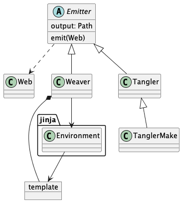
Here’s how the definitions are provided in the application.
The two reference class definitions are used by by the Emitter class, and needs to be defined first.
We’ll look at them later, since they’re a tiny strategy change in how cross-references
are displayed.
Base Class Definitions (19) +=
→ `Emitter base class (21)`_
→ `Weaver Subclass -- Uses Jinja templates to weave documentation (22)`_
→ `Tangler Subclass -- emits the output files (29)`_
→ `TanglerMake Subclass -- extends Tangler to avoid touching files that didn't change (33)`_
∎ Base Class Definitions (19). Used by → pyweb.py (80).
Imports (20) +=
import abc
from collections import ChainMap
from textwrap import dedent, shorten
from jinja2 import Environment, DictLoader, select_autoescape
import jinja2.nodes
∎ Imports (20). Used by → pyweb.py (80).
The Emitter class is an abstraction, used to check the consistency
of the subclasses.
Emitter base class (21) =
class Emitter(abc.ABC):
def __init__(self, output: Path):
self.logger = logging.getLogger(self.__class__.__qualname__)
self.log_indent = logging.getLogger("indent." + self.__class__.__qualname__)
self.output = output
@abc.abstractmethod
def emit(self, web: Web) -> None:
pass
∎ Emitter base class (21). Used by → Base Class Definitions (19).
The Weaver Subclass¶
The Weaver is a Facade that wraps Jinja template processing.
The job is to build the necessary environment, locate the templates,
and then evaluate the template’s generate() method to fill the values
into the template to create the woven document.
A single base_weaver_template template contains the essential structure of the woven document.
It’s a series of chunks.
Code chunks get a wrapper and quoting rules, text chunks are emitted unchanged.
Each chunk contains a sequence of commands.
The base_weaver_template relies on a number of macros that customize the output by injecting repetitive boiler-plate markup constructs around code blocks and references between code blocks.
Each markup language requires unique macros.
A default set of macros will yield a readable document.
The macros can be customized via the configuration file and via @t commands in the WEB file.
This permits some customization of the markup.
As an example, consider RST-formatted output. There are two variants on the way containers and classes work:
When used with Sphinx, the “small” caption at the end of a code block uses
.. rst-class:: small.When used without Sphinx, i.e., native docutils, the the “small” caption at the end of a code block can use
.. class:: small.
This distinction is a minor change to the template being used. The question is how to make that distinction in the weaver? There are several choices:
Use subclasses of
Weaverfor this.Note that templates are found by string name in the
template_name_mapwithin theWeaverclass. The--weavercommand-line option provides a string (e.g.,rstorhtml) used to build a key into the template map. We can extend this string with options and features.
Using the --weaver command-line option allows us to provide an expanded set of names for RST processing.
-w rstis the baseline, Sphinx option.-w rst-sphinxis an alias forrst. The dictionary key points to the same templates asrst.-w rst-nosphinxis the “pure-docutils” version, using.. class::instead of.. rst-class::.-w rst-docutilsis an alias for therst-nosphinxoption.
To match user expectations template_name_map must have a number of markup-related names.
markup. A 1-tuple with the default list.markup-option. A 2-tuple with the default list and an override list that extends or customizes the defaults.
As noted above, there will be aliases in the markup-option category to provide alternative names for feature sets.
Weaver Subclass – Uses Jinja templates to weave documentation (22) =
# Template Definitions
→ `Quote Rules Base Class (24)`_
→ `Debug Macros -- these display debugging information (25)`_
→ `RST Macros -- the default weave output (26)`_
→ `HTML Macros -- emit HTML weave output (27)`_
→ `LaTeX Macros -- emit LaTeX weave output (28)`_
→ `Common base template -- this is used for ALL weaving (23)`_
class Weaver(Emitter):
def __init__(self, output: Path = Path.cwd()) -> None:
super().__init__(output)
#: map markup name to macros in priority order: override, base
self.template_name_map = {
"debug": (debug_macros,),
"rst": (rst_macros,),
"html": (html_macros,),
"tex": (tex_macros,),
"latex": (tex_macros,),
"rst-sphinx": (rst_macros,),
"rst-nosphinx": (rst_docutils_macros, rst_macros,),
"rst-docutils": (rst_docutils_macros, rst_macros,),
"tex-verbatim": (tex_macros,),
"tex-minted": (tex_minted_macros, tex_macros),
"latex-verbatim": (tex_macros,),
"latex-minted": (tex_minted_macros, tex_macros),
}
#: map markup name to quote rules.
self.quote_rules = {
"debug": debug_quote_rules,
"rst": rst_quote_rules,
"rst-sphinx": rst_quote_rules,
"rst-nosphinx": rst_quote_rules,
"rst-docutils": rst_quote_rules,
"html": html_quote_rules,
"tex": latex_quote_rules,
"tex-verbatim": latex_quote_rules,
"tex-minted": latex_minted_quote_rules,
"latex": latex_quote_rules,
"latex-verbatim": latex_quote_rules,
"latex-minted": latex_minted_quote_rules,
}
#: macros found in the config file.
self.config_macros = []
#: final mapping from macro name to definition.
self.template_map = {}
#: Working JINJA environment.
self.env = Environment(
autoescape=select_autoescape()
)
#: Summary
self.linesWritten = 0
def set_markup(self, markup: str = "rst") -> "Weaver":
self.markup = markup
return self
def emit(self, web: Web) -> None:
"""Open output files. Then generate woven text."""
self.target_path = (self.output / web.web_path.name).with_suffix(f".{self.markup}")
self.logger.info("Weaving %s using %s markup", self.target_path, self.markup)
with self.target_path.open('w') as target_file:
for text in self.generate_text(web):
self.linesWritten += text.count("\n")
target_file.write(text)
def macro_name_iter(self, source: list[str]) -> Iterator[tuple[str, str]]:
for m in source:
ast = self.env.parse(m)
for child in ast.iter_child_nodes():
match child:
case jinja2.nodes.Macro() as macro:
yield macro.name, m
case _:
raise RuntimeError(f"improper macro text {type(child)!s}: {child!r}")
def configure_macros(self, web: Web) -> None:
if self.template_map: return
self.env.filters |= {
"quote_rules": self.quote_rules[self.markup]
}
ordered_definitions = (
# list(web_template_iter())
[self.config_macros] +
list(self.template_name_map[self.markup])
)
ordered_macro_name_maps = [
dict(self.macro_name_iter(priority))
for priority in ordered_definitions
]
all_macros = ChainMap(*ordered_macro_name_maps)
macro_template = "\n\n".join(
all_macros[k] for k in all_macros.keys()
)
self.template_map = {
'base_weaver_template': base_weaver_template,
'macros': macro_template
}
self.env.loader=DictLoader(self.template_map)
def generate_text(self, web: Web) -> Iterator[str]:
self.configure_macros(web)
macros = self.env.get_template(f"macros")
base_weaver_template = self.env.get_template("base_weaver_template")
return base_weaver_template.generate(web=web, macros=macros)
∎ Weaver Subclass – Uses Jinja templates to weave documentation (22). Used by → Base Class Definitions (19).
Within the Jinja framework, the macro definitions amount to Strategy plug-ins to the weaver. Each set of macro definitions is unique for a particular flavor of markup. The strategies include the quoting function used to escape markup characters.
A generic “base_weaver_template” template relies on macros. The macro definitions come from four sources:
Application defaults, defined here.
Application overrides to the defaults, also defined here.
Configured overrides from
pyweb.toml.Document overrides from the
.wfile in@t name @{...@}commands.
The document overrides are the highest priority.
The Weaver class must populate the environment very late in the process.
This must be done after the configuration files are read and after the web has been parsed to locate template definitions.
We can then pick the templates to put into a DictLoader to support the standard weaving structure.
Additionally, quoting rules apply to some template languages. The idea is that a few characters must be escaped for proper presentation in the code sample sections.
Common Base Template¶
The common base template expands each chunk and each command in order.
This involves some special case processing for OutputChunk and NamedChunk
which have a “wrapper” woven around the chunk’s sequence of commands so that it’s typeset in a distinctive style.
The base template relies on a number of individual macros:
text(command). Emits a block of text – this should do nothing with the text. The author’s original markup passes through untouched.begin_code(chunk). Starts a block of code, either@dor@o.code(command). Emits a block fo code. This may require escapes for special characters that would break the markup being used.ref(command). Emits a reference to a named block of code.end_code(chunk). Ends a block of code.file_xref(command). Emit the full@foutput, usually some kind of definition list.macro_xref(command). Emit the full@moutput, usually some kind of definition list.userid_xref(command). Emit the full@uoutput, usually some kind of definition list.
The ref() macro can also be used in the XREF output macros. It can also be used in the end_code() macro.
After a block of code, some tools (like Interscript) will show where the block was referenced.
The point of using the ref() macro in multiple places is to make all of them look identical.
There are a some optional formatting considerations.
These include cross-references as well as the variety of begin_code() options.
There are four styles for the “referencedBy” information in a Chunk.
Nothing.
The immediate
@<name@>Chunk.The entire transitive sequence of parents for the
@<name@>Chunk. There are two forms for this:Top-down path.
→ Named (1) / → Sub-Named (2) / → Sub-Sub-Named (3).Bottom-up path.
→ Sub-Sub-Named (3) ∈ → Sub-Named (2) ∈ → Named (1).
These require four distinct versions of the end_code() macro.
This macro uses the transitive_referencedBy property of a Chunk producing a sequence of ref() values.
(Note the → characters is a preface characters for a link.)
The begin_code() and end_code() macros will bracket a code block.
In LaTeX, there are a number of ways to bracket a literal block, including Verbatim, lstlisting, minted, or a custom-defined TColorBox.
The begin_code() and end_code() macros must match, of course.
There may be distinct parameters, also, to provide additional parameters to the chunk.
Common base template – this is used for ALL weaving (23) =
base_weaver_template = dedent("""\
{%- from macros import text, begin_code, code, ref, end_code, file_xref, macro_xref, userid_xref -%}
{% for chunk in web.chunks -%}
{%- if chunk.type_is('OutputChunk') or chunk.type_is('NamedChunk') -%}
{% if chunk.weave -%}
{{begin_code(chunk)}}
{%- for command in chunk.commands -%}
{%- if command.typeid.CodeCommand -%}{{code(command)}}
{%- elif command.typeid.ReferenceCommand -%}{{ref(command)}}
{%- endif -%}
{%- endfor -%}
{{end_code(chunk)}}
{%- endif -%}
{%- elif chunk.type_is('Chunk') -%}
{%- for command in chunk.commands -%}
{%- if command.typeid.TextCommand %}{{text(command)}}
{%- elif command.typeid.ReferenceCommand %}{{ref(command)}}
{%- elif command.typeid.FileXrefCommand %}{{file_xref(command)}}
{%- elif command.typeid.MacroXrefCommand %}{{macro_xref(command)}}
{%- elif command.typeid.UserIdXrefCommand %}{{userid_xref(command)}}
{%- endif -%}
{%- endfor -%}
{%- endif -%}
{%- endfor %}
""")
∎ Common base template – this is used for ALL weaving (23). Used by → Weaver Subclass – Uses Jinja templates to weave documentation (22).
The QuoteRule class lets us define a quote rule as a callable object.
The result of qr = QuoteRules(("this", "that")) is a callable object, qr() that performs the replacement.
Quote Rules Base Class (24) =
class QuoteRules:
def __init__(self, *mapping: tuple[str, str]) -> None:
self.mapping = mapping
def __call__(self, text: str) -> str:
clean = text
for from_, to_ in self.mapping:
clean = clean.replace(from_, to_)
return clean
∎ Quote Rules Base Class (24). Used by → Weaver Subclass – Uses Jinja templates to weave documentation (22).
Debug Macros¶
The debug macros don’t use a quote rule with individual replacements. In this case, the quote rule is the built-in repr() function.
Debug Macros – these display debugging information (25) =
debug_quote_rules = repr
debug_macros = [
dedent("""\
{%- macro text(command) -%}
text: {{command}}
{%- endmacro -%}
"""),
dedent("""\
{%- macro begin_code(chunk) %}
begin_code: {{chunk}}
{%- endmacro -%}
"""),
dedent("""\
{%- macro code(command) %}
code: {{command}}
{%- endmacro -%}
"""),
dedent("""\
{%- macro ref(id) %}
ref: {{id}}
{%- endmacro -%}
"""),
dedent("""\
{%- macro end_code(chunk) %}
end_code: {{chunk}}
{% endmacro -%}
"""),
dedent("""\
{%- macro file_xref(command) -%}
file_xref {{command.files}}
{%- endmacro -%}
"""),
dedent("""\
{%- macro macro_xref(command) -%}
macro_xref {{command.macros}}
{%- endmacro -%}
"""),
dedent("""\
{%- macro userid_xref(command) -%}
userid_xref {{command.userids}}
{%- endmacro -%}
""")
]
∎ Debug Macros – these display debugging information (25). Used by → Weaver Subclass – Uses Jinja templates to weave documentation (22).
RST Macros¶
The RST Macros produce ReStructuredText for the various web commands. Note that code lines must be indented when using this markup.
There is a base set of template macros.
The rst_weaver_template variable defines the default macros.
The rst-sphinx key makes these defaults active.
These can be overridden by macros defined in
the rst_nosphinx_template variable.
This defines updates to the base templates focused on docutils.
The rst-nosphinx and rst-docutils keys provides updates to the base temples focused on docutils.
RST Macros – the default weave output (26) =
rst_quote_rules = str
# Old rules, used with ``.. parsed-literal::``
#rst_quote_rules = QuoteRules(
# ('\\', r'\\'), # Must be first.
# ('`', r'\`'),
# ('_', r'\_'),
# ('*', r'\*'),
# ('|', r'\|'),
# )
rst_macros = [
dedent("""
{%- macro text(command) -%}
{{command.text}}
{%- endmacro -%}
"""),
dedent("""\
{%- macro begin_code(chunk) %}
.. _`{{chunk.full_name or chunk.name}} ({{chunk.seq}})`:
.. rubric:: {{chunk.full_name or chunk.name}} ({{chunk.seq}}) {% if chunk.initial %}={% else %}+={% endif %}
.. code-block::
:class: code
{% endmacro -%}
"""),
dedent("""\
{# For RST, each line must be indented. #}
{%- macro code(command) %}{% for line in command.text.splitlines() %} {{line | quote_rules}}
{% endfor -%}{% endmacro -%}
"""),
dedent("""\
{%- macro ref(id) %} \N{RIGHTWARDS ARROW} `{{id.full_name or id.name}} ({{id.seq}})`_{% endmacro -%}
"""),
dedent("""\
{%- macro end_code(chunk) %}
..
.. container:: small
\N{END OF PROOF} *{{chunk.full_name or chunk.name}} ({{chunk.seq}})*.
{% if chunk.referencedBy %}Used by {{ref(chunk.referencedBy)}}.{% endif %}
{% endmacro -%}
"""),
dedent("""\
{%- macro file_xref(command) -%}
{% for file in command.files -%}
:{{file.name}}:
\N{RIGHTWARDS ARROW} `{{file.name}} ({{file.seq}})`_
{%- endfor %}
{%- endmacro -%}
"""),
dedent("""\
{%- macro macro_xref(command) -%}
{% for macro in command.macros -%}
:{{macro.full_name}}:
{% for d in macro.def_list -%}\N{RIGHTWARDS ARROW} `{{d.full_name or d.name}} ({{d.seq}})`_{% if loop.last %}{% else %}, {% endif %}{%- endfor %}
{% endfor %}
{%- endmacro -%}
"""),
dedent("""\
{%- macro userid_xref(command) -%}
{% for userid in command.userids -%}
:{{userid.userid}}:
{% for r in userid.ref_list -%}\N{RIGHTWARDS ARROW} `{{r.full_name or r.name}} ({{r.seq}})`_{% if loop.last %}{% else %}, {% endif %}{%- endfor %}
{% endfor %}
{%- endmacro -%}
""")
]
rst_docutils_macros = [
dedent("""\
{%- macro end_code(chunk) %}
..
.. class:: small
\N{END OF PROOF} *{{chunk.full_name or chunk.name}} ({{chunk.seq}})*
{% endmacro -%}
""")
]
∎ RST Macros – the default weave output (26). Used by → Weaver Subclass – Uses Jinja templates to weave documentation (22).
HTML Macros¶
The HTML macros use a relatively simple markup, avoiding any CSS names. A slightly more flexible approach might be to name specific CSS styles, and provide generic definitions for those styles. This would make it easier to tailor HTML output via CSS changes, avoiding any HTML modifications.
The ref() macro injects → characters into the chunk references as an attempt to make it clear they are links.
HTML Macros – emit HTML weave output (27) =
html_quote_rules = QuoteRules(
("&", "&"), # Must be first
("<", "<"),
(">", ">"),
('"', """), # Only applies inside tags...
)
html_macros = [
dedent("""\
{%- macro text(command) -%}
{{command.text}}
{%- endmacro -%}
"""),
dedent("""\
{%- macro begin_code(chunk) %}
<a name="pyweb_{{chunk.seq}}"></a>
<!--line number {{chunk.location}}-->
<p><em>{{chunk.full_name or chunk.name}} ({{chunk.seq}})</em> {% if chunk.initial %}={% else %}+={% endif %}</p>
<pre><code>
{%- endmacro -%}
"""),
dedent("""\
{%- macro code(command) -%}{{command.text | quote_rules}}{%- endmacro -%}
"""),
dedent("""\
{%- macro ref(id) %}→<a href="#pyweb_{{id.seq}}"><em>{{id.full_name or id.name}} ({{id.seq}})</em></a>{% endmacro -%}
"""),
dedent("""\
{%- macro end_code(chunk) %}
</code></pre>
<p>∎ <em>{{chunk.full_name or chunk.name}} ({{chunk.seq}})</em>.
{% if chunk.referencedBy %}Used by {{ref(chunk.referencedBy)}}.{% endif %}
</p>
{% endmacro -%}
"""),
dedent("""\
{%- macro file_xref(command) %}
<dl>
{% for file in command.files -%}
<dt>{{file.name}}</dt><dd>{{ref(file)}}</dd>
{%- endfor %}
</dl>
{% endmacro -%}
"""),
dedent("""\
{%- macro macro_xref(command) %}
<dl>
{% for macro in command.macros -%}
<dt>{{macro.full_name}}<dt>
<dd>{% for d in macro.def_list -%}{{ref(d)}}{% if loop.last %}{% else %}, {% endif %}{%- endfor %}</dd>
{% endfor %}
</dl>
{% endmacro -%}
"""),
dedent("""\
{%- macro userid_xref(command) %}
<dl>
{% for userid in command.userids -%}
<dt>{{userid.userid}}</dt>
<dd>{% for r in userid.ref_list -%}{{ref(r)}}{% if loop.last %}{% else %}, {% endif %}{%- endfor %}</dd>
{% endfor %}
</dl>
{% endmacro -%}
""")
]
∎ HTML Macros – emit HTML weave output (27). Used by → Weaver Subclass – Uses Jinja templates to weave documentation (22).
LaTeX Macros¶
The LaTeX macros defined here use a markup focused on using the Verbatim environment.
Common alternatives include lstlistings and minted.
A particular popular form uses Text Color Block (TCB) to create distinctive code formatting.
LaTeX Macros – emit LaTeX weave output (28) =
latex_quote_rules = QuoteRules(
("\\end{Verbatim}", "\\end\\,{Verbatim}"), # Allow \end{Verbatim} in a Verbatim context
("\\{", "\\\\,{"), # Prevent unexpected commands in Verbatim
("$", "\\$"), # Prevent unexpected math in Verbatim
)
latex_minted_quote_rules = QuoteRules(
("\\end{minted}", "\\end\\,{minted}"), # Allow \end{minted} in a minted context
)
tex_macros = [
dedent("""\
{%- macro text(command) -%}
{{command.text}}
{%- endmacro -%}
"""),
dedent("""\
{%- macro begin_code(chunk) %}
\\label{pyweb-{{chunk.seq}}}
\\begin{flushleft}
\\textit{Code example {{chunk.full_name or chunk.name}} ({{chunk.seq}})}
\\begin{Verbatim}[commandchars=\\\\\\{\\},codes={\\catcode`$$=3\\catcode`^=7},frame=single]
{%- endmacro -%}
"""),
dedent("""\
{%- macro code(command) -%}{{command.text | quote_rules}}{%- endmacro -%}
"""),
dedent("""\
{%- macro ref(id) %}$$\\rightarrow$$ Code Example {{id.full_name or id.name}} ({{id.seq}}){% endmacro -%}
"""),
dedent("""\
{%- macro end_code(chunk) %}
\\end{Verbatim}
\\end{flushleft}
{% endmacro -%}
"""),
dedent("""\
{%- macro file_xref(command) %}
\\begin{itemize}
{% for file in command.files -%}
\\item {{file.name}}: {{ref(file)}}
{%- endfor %}
\\end{itemize}
{% endmacro -%}
"""),
dedent("""\
{%- macro macro_xref(command) %}
\\begin{itemize}
{% for macro in command.macros -%}
\\item {{macro.full_name}} \\\\
{% for d in macro.def_list -%}{{ref(d)}}{% if loop.last %}{% else %}, {% endif %}{%- endfor %}
{% endfor %}
\\end{itemize}
{% endmacro -%}
"""),
dedent("""\
{%- macro userid_xref(command) %}
\\begin{itemize}
{% for userid in command.userids -%}
\\item {{userid.userid}} \\\\
{% for r in userid.ref_list -%}{{ref(r)}}{% if loop.last %}{% else %}, {% endif %}{%- endfor %}
{% endfor %}
\\end{itemize}
{% endmacro -%}
""")
]
tex_minted_macros = [
dedent("""\
{%- macro begin_code(chunk) %}
\\label{pyweb-{{chunk.seq}}}
\\textit{Code example {{chunk.full_name or chunk.name}} ({{chunk.seq}})}
\\begin{minted}{{'{'}}{{chunk.style}}{{'}'}}
{%- endmacro -%}
"""),
dedent("""\
{%- macro end_code(chunk) %}
\\end{minted}
{% endmacro -%}
"""),
]
∎ LaTeX Macros – emit LaTeX weave output (28). Used by → Weaver Subclass – Uses Jinja templates to weave documentation (22).
The Tangler Subclasses¶
Tangling is a variation on emitting that includes all the code in the order defined by the @o file commands.
This is not necessarily the order they’re presented in the document.
The whole point of Weaving and Tangling is to write a document in an order that’s sensible for people to understand. The tangled output is for compilers and run-time environments.
Each file is individually tangled, unrelated to the order of the source
WEB document.
The emit() process, therefore, iterates through all of the files defined in the WEB.
There’s a complex interplay between Tangler and CodeCommand
to maintain the indentations.
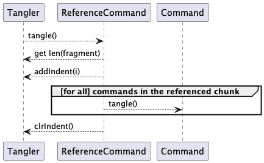
This approach can preserves the indentation in front of a @< reference @> command.
Tangler Subclass – emits the output files (29) =
class Tangler(Emitter):
code_indent = 0 #: Initial indent
def __init__(self, output: Path = Path.cwd()) -> None:
super().__init__(output)
self.include_line_numbers = False
self.context: list[int] = [] #: Indentations
self.fragment = "" # Nothing written yet.
# Create context and initial lastIndent values
self.resetIndent(self.code_indent)
# Summaries
self.reference_names: set[str] = set()
self.linesWritten = 0
self.totalFiles = 0
self.totalLines = 0
self.logger.debug("output base: %r, line numbers %s", self.output, self.include_line_numbers)
def emit(self, web: Web) -> None:
for file_chunk in web.files:
self.logger.info("Tangling %s", file_chunk.name)
self.emit_file(web, file_chunk)
def emit_file(self, web: Web, file_chunk: Chunk) -> None:
target_path = self.output / (file_chunk.name or "Untitled.out")
self.logger.debug("Writing %s", target_path)
self.logger.debug("Chunk %r", file_chunk)
with target_path.open("w") as target:
# An initial command to provide indentations.
for command in file_chunk.commands:
command.tangle(self, target)
→ `Emitter write a block of code with proper indents (30)`_
→ `Emitter indent control: set, clear and reset (31)`_
∎ Tangler Subclass – emits the output files (29). Used by → Base Class Definitions (19).
The codeBlock() method is used by each block of code tangled into
a document. There are two sources of indentation:
A
Chunkcan provide an indent setting as an option. This is provided by theindentattribute of the tangle context. If specified, this is the indentation.A
@< name @>ReferenceCommandmay be indented. This will be in aChunkas the following three commands:A
CodeCommandwith only spaces and no trailing\n. The indent is buffered – not written – and thefragmentattribute is set.The
ReferenceCommand. This interpolates text from aNamedChunkusing the prevailing indent. Thetangle()method usesaddIndent()andclrIndent()to mark this. The processing depends on this tangler’sfragmentattribute to provide the pending indentation; theaddIndent()must consume the fragment to prevent confusion with subsequent indentations.A
CodeCommandwith a trailing\n. (Often it’s only the newline.) If thefragmentattribute is set, there’s a pending indentation that hasn’t yet been written. This can happen with there’s a@@command at the left end of a line; often a Python decorator. The fragment is written and thefragmentattribute cleared. NoaddIdent()will have been done to consume the fragment.
While the WEB language permits multiple @<name@> @<name@> on a single line,
this is odd and potentially confusing. It isn’t clear how the second reference
should be indented.
The ReferenceCommand tangle() implementation handles much of this.
The following two rules apply:
A line of text that does not end with a newline, sets a new prevailing indent for the following command(s).
A line of text ending with a newline resets the prevailing indent.
This a stack of indentations, maintained by the Tangler.
Emitter write a block of code with proper indents (30) =
def codeBlock(self, target: TextIO, text: str) -> None:
"""Indented write of text in a ``CodeCommand``.
Counts lines and saves position to indent to when expanding ``@<...@>`` references.
The ``fragment`` is the prevailing indent used in reference expansion.
"""
for line in text.splitlines(keepends=True):
self.logger.debug("codeBlock(%r)", line)
indent = self.context[-1]
if len(line) == 0:
# Degenerate case of empty CodeText command. Should not occur.
pass
elif not line.endswith('\n'):
# Possible start of indentation prior to a ``@<name@>``
target.write(indent*' ')
wrote = target.write(line)
self.fragment = ' ' * wrote
# May be used by a ``ReferenceCommand``, if needed.
elif line.endswith('\n'):
target.write(indent*' ')
target.write(line)
self.linesWritten += 1
else:
raise RuntimeError("Non-exhaustive if statement.")
∎ Emitter write a block of code with proper indents (30). Used by → Tangler Subclass – emits the output files (29).
The addIndent() increments the indent.
Used by @<name@> to set a prevailing indent.
The setIndent() pushes a fixed indent instead adding an increment.
Used by a Chunk with an -indent option.
The clrIndent() method discards the most recent indent from the context stack.
This is used when finished
tangling a source chunk. This restores the indent to the prevailing indent.
The resetIndent() method removes all indent context information and resets the indent
to a default.
Emitter indent control: set, clear and reset (31) =
def addIndent(self, increment: int) -> None:
self.lastIndent = self.context[-1]+increment
self.context.append(self.lastIndent)
self.log_indent.debug("addIndent %d: %r", increment, self.context)
self.fragment = ""
def setIndent(self, indent: int) -> None:
self.context.append(indent)
self.lastIndent = self.context[-1]
self.log_indent.debug("setIndent %d: %r", indent, self.context)
self.fragment = ""
def clrIndent(self) -> None:
if len(self.context) > 1:
self.context.pop()
self.lastIndent = self.context[-1]
self.log_indent.debug("clrIndent %r", self.context)
self.fragment = ""
def resetIndent(self, indent: int = 0) -> None:
"""Resets the indentation context."""
self.lastIndent = indent
self.context = [self.lastIndent]
self.log_indent.debug("resetIndent %d: %r", indent, self.context)
∎ Emitter indent control: set, clear and reset (31). Used by → Tangler Subclass – emits the output files (29).
An extension to the Tangler class that only updates a file if the content has changed.
This tangles to a temporary file.
If the content is identical, the temporary file is quietly disposed of.
Otherwise, the temporary file is linked to the original name.
Files are compared with the filecmp module.
Imports (32) +=
import filecmp
import tempfile
import os
∎ Imports (32). Used by → pyweb.py (80).
TanglerMake Subclass – extends Tangler to avoid touching files that didn’t change (33) =
class TanglerMake(Tangler):
def emit_file(self, web: Web, file_chunk: Chunk) -> None:
target_path = self.output / (file_chunk.name or "Untitled.out")
self.logger.debug("Writing %s via a temp file", target_path)
self.logger.debug("Chunk %r", file_chunk)
fd, tempname = tempfile.mkstemp(dir=os.curdir)
with os.fdopen(fd, "w") as target:
for command in file_chunk.commands:
command.tangle(self, target)
try:
same = filecmp.cmp(tempname, target_path)
except OSError as e:
same = False # Doesn't exist. (Could check for errno.ENOENT)
if same:
self.logger.info("Unchanged '%s'", target_path)
os.remove(tempname)
else:
# Windows requires the original file name be removed first.
try:
target_path.unlink()
except OSError as e:
pass # Doesn't exist. (Could check for errno.ENOENT)
target_path.parent.mkdir(parents=True, exist_ok=True)
target_path.hardlink_to(tempname)
os.remove(tempname)
self.logger.info("Wrote %d lines to %s", self.linesWritten, target_path)
∎ TanglerMake Subclass – extends Tangler to avoid touching files that didn’t change (33). Used by → Base Class Definitions (19).
Input Parsing¶
There are three tiers to the input parsing:
A base tokenizer.
Additionally, a separate parser is used for options in
@dand@ocommands.The overall
WebReaderclass.
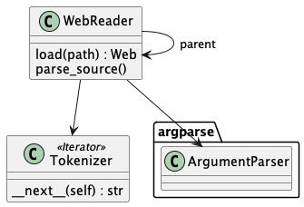
We’ll start with the WebReader class definition
Base Class Definitions (34) +=
→ `Tokenizer class - breaks input into tokens (52)`_
→ `WebReader class - parses the input file, building the Web structure (35)`_
∎ Base Class Definitions (34). Used by → pyweb.py (80).
The WebReader Class¶
There are two forms of the constructor for a WebReader.
The initial WebReader instance is created with code like the following:
p = WebReader()
p.command = options.commandCharacter
This will define the command character; usually provided as a command-line parameter to the application.
When processing an include file (with the @i command), a child WebReader
instance is created with code like the following:
c = WebReader(parent=parentWebReader)
This will inherit the configuration from the parent WebReader.
This will also include a reference from child to parent so that embedded Python expressions
can view the entire input context.
The WebReader class parses the input file into command blocks.
These are assembled into Chunks, and the Chunks are assembled into the document
Web. Once this input pass is complete, the resulting Web can be tangled or
woven.
The commands have three general types:
“Structural” commands define the structure of the
Chunks. The structural commands are@dand@o, as well as the@{,@},@[,@]brackets, and the@icommand to include another file.“Inline” commands are inline within a
Chunk: they define internalCommands. Blocks of text are minor commands, as well as the@<name@>references. The@@escape is also handled here so that all further processing is independent of any parsing.“Content” commands generate woven content. These include the various cross-reference commands (
@f,@mand@u).
There are two class-level argparse.ArgumentParser instances used by this class.
- output_option_parser:
An
argparse.ArgumentParserused to parse the@ocommand’s options.- definition_option_parser:
An
argparse.ArgumentParserused to parse the@dcommand’s options.
The class has the following attributes:
- parent:
is the outer
WebReaderwhen processing a@icommand.- command:
is the command character; a WebReader will use the parent command character if the parent is not
None. Default is@.- permitList:
is the list of commands that are permitted to fail. This is generally an empty list or
('@i',).- _source:
The open file-like object being used by
load().- filePath:
The path being processed; this provides a visible file name.
- tokenizer:
An instance of
Tokenizerused to parse the input. This is built whenload()is called.- totalLines:
- totalFiles:
- errors:
Summary counts.
WebReader class - parses the input file, building the Web structure (35) =
class WebReader:
"""Parse an input file, creating Chunks and Commands."""
# Configuration
#: The command prefix, default ``@``.
command: str
#: Permitted errors, usually @i commands
permitList: list[str]
#: Working directory to resolve @i commands
base_path: Path
#: The tokenizer used to find commands
tokenizer: Tokenizer
# State of the reader
#: Parent context for @i commands
parent: "WebReader | None"
#: Input Path
filePath: Path
#: Input file-like object, default is self.filePath.open()
_source: TextIO
#: The sequence of Chunk instances being built
content: list[Chunk]
def __init__(self, parent: "WebReader | None" = None) -> None:
self.logger = logging.getLogger(self.__class__.__qualname__)
# Configuration comes from the parent or defaults if there is no parent.
self.parent = parent
if self.parent:
self.command = self.parent.command
self.permitList = self.parent.permitList
else: # Defaults until overridden
self.command = '@'
self.permitList = []
# Summary
self.totalLines = 0
self.totalFiles = 0
self.errors = 0
→ `WebReader command literals (50)`_
def __str__(self) -> str:
return self.__class__.__name__
→ `WebReader location in the input stream (47)`_
→ `WebReader load the web (49)`_
→ `WebReader handle a command string (36)`_
∎ WebReader class - parses the input file, building the Web structure (35). Used by → Base Class Definitions (34).
The reader maintains a context into which constructs are added.
The Web contains Chunk instances in self.web.chunks.
The current chunk is self.web.chunks[-1].
Each Chunk, similarly, has a command context in chunk.commands[-1].
This works because the language is “flat”: there are no nested @d or @o
chunks.
Command recognition is done via a Chain of Command-like design.
There are two conditions: the command string is recognized or it is not recognized.
If the command is recognized, handleCommand() will do one of the following:
For “structural” commands, it will attach the current
Chunk(self.aChunk) to the currentWeb(self.aWeb), and start a newChunk. This becomes the context for processing commands. By default an anonymousChunkused to accumulate text is available for all of the content outside named chunks.For “inline” and “content” commands, create a
Command, attach it to the currentChunk(self.aChunk).
If the command is not recognized, handleCommand() returns false, and this is a syntax error.
A subclass can override handleCommand() to
Evaluate the base class
handleCommand()method;If the command is unknown to the base, then the current class can process it;
If the command is unknown to both classes, then return
False. Either a subclass will handle it, or the default activity taken byload()is to treat the command as a syntax error.
The handleCommand() implementation is a massive match statement.
It might be a good idea to decompose this into a number of separate methods.
This would make the match statement shorter and easier to understand.
WebReader handle a command string (36) =
def handleCommand(self, token: str) -> bool:
self.logger.debug("Reading %r", token)
new_chunk: Chunk | None = None
match token[:2]:
case self.cmdo:
→ `start an OutputChunk, adding it to the web (37)`_
case self.cmdd:
→ `start a NamedChunk or NamedDocumentChunk, adding it to the web (38)`_
case self.cmdi:
→ `include another file (39)`_
case self.cmdrcurl | self.cmdrbrak:
→ `finish a chunk, start a new Chunk adding it to the web (40)`_
case self.cmdpipe:
→ `assign user identifiers to the current chunk (41)`_
case self.cmdf:
self.content[-1].commands.append(FileXrefCommand(self.location()))
case self.cmdm:
self.content[-1].commands.append(MacroXrefCommand(self.location()))
case self.cmdu:
self.content[-1].commands.append(UserIdXrefCommand(self.location()))
case self.cmdlangl:
→ `add a reference command to the current chunk (42)`_
case self.cmdlexpr:
→ `add an expression command to the current chunk (44)`_
case self.cmdcmd:
→ `double at-sign replacement, append this character to previous TextCommand (45)`_
case self.cmdlcurl | self.cmdlbrak:
# These should have been consumed as part of @o and @d parsing
self.logger.error("Extra %r (possibly missing chunk name) near %r", token, self.location())
self.errors += 1
case _:
return False # did not recogize the command
return True # did recognize the command
∎ WebReader handle a command string (36). Used by → WebReader class - parses the input file, building the Web structure (35).
An output chunk has the form @o name @{ content @}.
We use the first two tokens to name the OutputChunk. We expect
the @{ separator. We then attach all subsequent commands
to this chunk while waiting for the final @} token to end the chunk.
We’ll use an ArgumentParser to locate the optional parameters. This will then let
us build an appropriate instance of OutputChunk.
With some small additional changes, we could use OutputChunk(**options).
start an OutputChunk, adding it to the web (37) =
arg_str = next(self.tokenizer)
self.expect({self.cmdlcurl})
new_chunk = OutputChunk(options=shlex.split(arg_str))
self.content.append(new_chunk)
# capture an OutputChunk up to @}
∎ start an OutputChunk, adding it to the web (37). Used by → WebReader handle a command string (36).
A named chunk has the form @d name @{ content @} for
code and @d name @[ content @] for document source.
We use the first two tokens to name the NamedChunk or NamedDocumentChunk.
We expect either the @{ or @[ separator, and use the actual
token found to choose which subclass of Chunk to create.
We then attach all subsequent commands
to this chunk while waiting for the final @} or @] token to
end the chunk.
We’ll use an ArgumentParser to locate the optional parameter of -noindent.
Then we can use the options value to create an appropriate subclass of NamedChunk.
If `"-indent" is in options, this is the default.
If both are in the options, we should provide a warning.
start a NamedChunk or NamedDocumentChunk, adding it to the web (38) =
arg_str = next(self.tokenizer)
brack = self.expect({self.cmdlcurl, self.cmdlbrak})
# REFACTOR parse_options into various CHUNK types.
# REFACTOR remove NamedChunk_Noindent as a distinct subclass.
if brack == self.cmdlbrak:
# options = NamedDocumentChunk.parse_options(shlex.split(arg_str))
# name = ' '.join(options.argument)
new_chunk = NamedDocumentChunk(options=shlex.split(arg_str))
elif brack == self.cmdlcurl:
# options = NamedChunk.parse_options(shlex.split(arg_str))
# indent: None | int = None
# name = ' '.join(options.argument)
# if 'noindent' in options and options.noindent:
# indent = 0
# elif 'indent' in options and options.indent:
# indent = int(options.indent)
new_chunk = NamedChunk(options=shlex.split(arg_str))
elif brack == None:
new_chunk = None
pass # Error already noted by ``expect()``
else:
raise RuntimeError("Design Error")
if new_chunk:
self.content.append(new_chunk)
# capture a NamedChunk up to @} or @]
∎ start a NamedChunk or NamedDocumentChunk, adding it to the web (38). Used by → WebReader handle a command string (36).
An import command has the unusual form of @i name, with no trailing
separator. When we encounter the @i token, the next token will start with the
file name, but may continue with an anonymous chunk. To avoid confusion,
we require that all @i commands occur at the end of a line,
The break on the '\n' which ends the file name.
This permits file names with embedded spaces. It also permits arguments and options,
if really necessary.
Once we have split the file name away from the rest of the following anonymous chunk,
we push the following token (a \n) back into the token stream, so that it will be the
first token examined at the top of the load() loop.
We create a child WebReader instance to process the included file. The entire file
is loaded into the current Web instance. A new, empty Chunk is created at the end
of the file so that processing can resume with an anonymous Chunk.
The reader has a permitList attribute.
This lists any commands where failure is permitted. Currently, only the @i command
can be set to permit failure; this allows a .w to include
a file that does not yet exist.
The primary use case for this permitted error feature is when weaving test output.
A first use of the py-web-lp can be used to tangle the program source files,
ignoring a missing test output file, named in an @i command.
The application can then be run to create the missing test output file.
After this, a second use of the py-web-lp
can weave the test output file into a final, complete document.
include another file (39) =
incPath = Path(next(self.tokenizer).strip())
try:
include = WebReader(parent=self)
if not incPath.is_absolute():
incPath = self.base_path / incPath
self.logger.info("Including '%s'", incPath)
self.content.extend(include.load(incPath))
self.totalLines += include.tokenizer.lineNumber
self.totalFiles += include.totalFiles
if include.errors:
self.errors += include.errors
self.logger.error("Errors in included file '%s', output is incomplete.", incPath.relative_to(self.base_path))
except Error as e:
self.logger.error("Problems with included file '%s', output is incomplete.", incPath)
self.errors += 1
except IOError as e:
self.logger.error("Problems finding included file '%s', output is incomplete.", incPath)
# Discretionary -- sometimes we want to continue
if self.cmdi in self.permitList: pass
else: raise # Seems heavy-handed, but, the file wasn't found!
# Start a new context for text or commands *after* the ``@i``.
self.content.append(Chunk())
∎ include another file (39). Used by → WebReader handle a command string (36).
When a @} or @] are found, this finishes a named chunk.
The next text is therefore part of an anonymous chunk.
Note that no check is made to assure that the previous Chunk was indeed a named
chunk or output chunk started with @{ or @[.
To do this, an attribute would be needed for each Chunk subclass that indicated if a trailing bracket was necessary.
For the base Chunk class, this would be false, but for all other subclasses of
Chunk, this would be true.
finish a chunk, start a new Chunk adding it to the web (40) =
# Start a new context for text or commands *after* this command.
self.content.append(Chunk())
∎ finish a chunk, start a new Chunk adding it to the web (40). Used by → WebReader handle a command string (36).
User identifiers occur after a @| command inside a NamedChunk.
Note that no check is made to assure that the previous Chunk was indeed a named
chunk or output chunk started with @{.
To do this, an attribute would be needed for each Chunk subclass that indicated if user identifiers are permitted.
For the base Chunk class, this would be false, but for the NamedChunk class and
OutputChunk class, this would be true.
User identifiers are name references at the end of a NamedChunk
These are accumulated and expanded by @u reference
assign user identifiers to the current chunk (41) =
try:
names = next(self.tokenizer).strip().split()
self.content[-1].def_names.extend(names)
except AttributeError:
# Out of place @| user identifier command
self.logger.error("Unexpected references near %r: %r", self.location(), token)
self.errors += 1
∎ assign user identifiers to the current chunk (41). Used by → WebReader handle a command string (36).
A reference command has the form @<name@>. We accept three
tokens from the input, the middle token is the referenced name.
add a reference command to the current chunk (42) =
# get the name, introduce into the named Chunk dictionary
name = next(self.tokenizer).strip()
closing = self.expect({self.cmdrangl})
self.content[-1].commands.append(ReferenceCommand(name, self.location()))
self.logger.debug("Reading %r %r", name, closing)
∎ add a reference command to the current chunk (42). Used by → WebReader handle a command string (36).
An expression command has the form @(Python Expression@).
We accept three tokens from the input, the middle token is the expression.
There are two alternative semantics for an embedded expression.
Deferred Execution. This requires definition of a new subclass of
Command,ExpressionCommand, and appends it into the currentChunk. At weave and tangle time, this expression is evaluated. The insert might look something like this:aChunk.append(ExpressionCommand(expression, self.location())).Immediate Execution. This simply creates a context and evaluates the Python expression. The output from the expression becomes a
TextCommand, and is append to the currentChunk.
We use the Immediate Execution semantics – the expression is immediately appended to the current chunk’s text.
We provide a few elements of the os module. We provide os.path library.
The os.getcwd() could be changed to os.path.realpath('.'), but that seems too long-winded.
Imports (43) +=
import builtins
import sys
import platform
∎ Imports (43). Used by → pyweb.py (80).
add an expression command to the current chunk (44) =
# get the Python expression, create the expression result
expression = next(self.tokenizer)
self.expect({self.cmdrexpr})
try:
# Build Context
# **TODO:** Parts of this are static and can be built as part of ``__init__()``.
dangerous = {
'breakpoint', 'compile', 'eval', 'exec', 'execfile', 'globals', 'help', 'input',
'memoryview', 'open', 'print', 'super', '__import__'
}
safe = types.SimpleNamespace(**dict(
(name, obj)
for name,obj in builtins.__dict__.items()
if name not in dangerous
))
globals = dict(
__builtins__=safe,
os=types.SimpleNamespace(path=os.path, getcwd=os.getcwd, name=os.name),
time=time,
datetime=datetime,
platform=platform,
theWebReader=self,
theFile=self.filePath,
thisApplication=sys.argv[0],
__version__=__version__, # Legacy compatibility. Deprecated.
version=__version__,
theLocation=str(self.location()), # The only thing that's dynamic
)
# Evaluate
result = str(eval(expression, globals))
except Exception as exc:
self.logger.error('Failure to process %r: exception is %r', expression, exc)
self.errors += 1
result = f"@({expression!r}: Error {exc!r}@)"
self.content[-1].add_text(result, self.location())
∎ add an expression command to the current chunk (44). Used by → WebReader handle a command string (36).
A double command sequence ('@@', when the command is an '@') has the usual meaning of '@' in the input stream.
We do this by appending text to the last command in the current Chunk.
This will append the character on the end of the most recent TextCommand or CodeCommand`.
If this fails, it will create a new, empty TextCommand or CodeCommand.
double at-sign replacement, append this character to previous TextCommand (45) =
self.logger.debug(f"double-command: {self.content[-1]=}")
self.content[-1].add_text(self.command, self.location())
∎ double at-sign replacement, append this character to previous TextCommand (45). Used by → WebReader handle a command string (36).
The expect() method examines the next token to see if it is the expected item.
Any '\n' characters are absorbed.
If this is not found, a standard type of error message is raised.
This is used by handleCommand().
WebReader handle a command string (46) +=
def expect(self, tokens: set[str]) -> str | None:
"""Compare next token with expectation, quietly skipping whitespace (i.e., ``\n``)."""
try:
t = next(self.tokenizer)
while t == '\n':
t = next(self.tokenizer)
except StopIteration:
self.logger.error("At %r: end of input, %r not found", self.location(), tokens)
self.errors += 1
return None
if t in tokens:
return t
else:
self.logger.error("At %r: expected %r, found %r", self.location(), tokens, t)
self.errors += 1
return None
∎ WebReader handle a command string (46). Used by → WebReader class - parses the input file, building the Web structure (35).
The location() provides the file name and line number.
This allows error messages as well as tangled or woven output
to correctly reference the original input files.
WebReader location in the input stream (47) =
def location(self) -> tuple[str, int]:
return (str(self.filePath.relative_to(self.base_path)), self.tokenizer.lineNumber+1)
∎ WebReader location in the input stream (47). Used by → WebReader class - parses the input file, building the Web structure (35).
The load() method reads the entire input file as a sequence of tokens, split up by the Tokenizer.
Each token that appears to be a command is passed to the handleCommand() method.
If the handleCommand() method returns a True result, the command was recognized and placed in the Web.
If handleCommand() returns a False result, the command was unknown, and we write a warning but treat it as text.
The load() method is used recursively to handle the @i command.
The issue is that it’s always loading a single top-level web.
Imports (48) +=
from typing import TextIO, cast
∎ Imports (48). Used by → pyweb.py (80).
WebReader load the web (49) =
def load(self, filepath: Path, source: TextIO | None = None) -> list[Chunk]:
"""Returns a flat list of chunks to be made into a Web.
Also used to expand ``@i`` included files.
"""
self.filePath = filepath
self.base_path = self.filePath.parent
if source:
self._source = source
self.parse_source()
else:
with self.filePath.open() as self._source:
self.parse_source()
return self.content
def parse_source(self) -> None:
"""Builds a sequence of Chunks."""
self.tokenizer = Tokenizer(self._source, self.command)
self.totalFiles += 1
# Initial anonymous chunk.
self.content = [Chunk()]
for token in self.tokenizer:
if len(token) >= 2 and token.startswith(self.command):
if self.handleCommand(token):
continue
else:
self.logger.error('Unknown @-command in input: %r near %r', token, self.location())
self.content[-1].add_text(token, self.location())
elif token:
# Accumulate a non-empty block of text in the current chunk.
self.content[-1].add_text(token, self.location())
else:
# Whitespace
pass
self.logger.debug("parse_source: [")
for c in self.content:
self.logger.debug(" %r", c)
self.logger.debug("]")
∎ WebReader load the web (49). Used by → WebReader class - parses the input file, building the Web structure (35).
The command character can be changed to permit
some flexibility when working with languages that make extensive use of the @ symbol.
The initialization of the WebReader is based on the selected command character.
WebReader command literals (50) =
# Structural ("major") commands
self.cmdo = self.command+'o'
self.cmdd = self.command+'d'
self.cmdlcurl = self.command+'{'
self.cmdrcurl = self.command+'}'
self.cmdlbrak = self.command+'['
self.cmdrbrak = self.command+']'
self.cmdi = self.command+'i'
# Inline ("minor") commands
self.cmdlangl = self.command+'<'
self.cmdrangl = self.command+'>'
self.cmdpipe = self.command+'|'
self.cmdlexpr = self.command+'('
self.cmdrexpr = self.command+')'
self.cmdcmd = self.command+self.command
# Content "minor" commands
self.cmdf = self.command+'f'
self.cmdm = self.command+'m'
self.cmdu = self.command+'u'
∎ WebReader command literals (50). Used by → WebReader class - parses the input file, building the Web structure (35).
The Tokenizer Class¶
The WebReader requires a tokenizer. The tokenizer breaks the input text into a stream of tokens.
There are two broad classes of tokens:
r'@.'command tokens, including the structural, inline, and content commands.r'\n'. Inside text, these matter. Within structural command tokens, these don’t matter. Except after the filename after an@icommand, where one of these end the command.The remaining text; neither newlines nor commands.
The tokenizer works by reading the entire file and splitting on r'@.' patterns.
The re.split() function will separate the input and preserve the actual character sequence on which the input was split.
This breaks the input into blocks of text separated by the r'@.' characters.
For example:
>>> pat.split( "@{hi mom@}")
['', '@{', 'hi mom', '@}', '']
This tokenizer splits the input using r'@.|\n'.
The idea is that we locate commands, newlines and the interstitial text as three classes of tokens.
We can then assemble each Command instance from a short sequence of tokens.
The core TextCommand and CodeCommand will be a line of text ending with the \n.
The tokenizer counts newline characters for us, so that error messages can include a line number. Also, we can tangle extract comments into a file to reveal source line numbers.
Since the tokenizer is a proper iterator, we can use tokens = iter(Tokenizer(source)) and next(tokens) to step through the sequence of tokens until we raise a StopIteration
exception.
Imports (51) +=
import re
from collections.abc import Iterator, Iterable
∎ Imports (51). Used by → pyweb.py (80).
Tokenizer class - breaks input into tokens (52) =
class Tokenizer(Iterator[str]):
def __init__(self, stream: TextIO, command_char: str='@') -> None:
self.command = command_char
self.parsePat = re.compile(f'({self.command}.|\\n)')
self.token_iter = (t for t in self.parsePat.split(stream.read()) if len(t) != 0)
self.lineNumber = 0
def __next__(self) -> str:
token = next(self.token_iter)
self.lineNumber += token.count('\n')
return token
def __iter__(self) -> Iterator[str]:
return self
∎ Tokenizer class - breaks input into tokens (52). Used by → Base Class Definitions (34).
Other Application Components¶
There are a number of other components:
Error class Defines a uniform exception for this module.
Action Class Hierarchy defines the actions the application can perform. This includes loading the WEB file, weaving, tangling, and doing combinations of actions.
The Application Class is a high-level definition of the py-web-lp application as a whole.
Logging setup defines a handy context manager to configure and shut down logging.
The Main Function is a top-level function to create an instance of
Application, and execute it with either supplied arguments or (by default) the actual command-line arguments. This makes it easy to import and reusemain()in other applications.
Error class¶
An Error is raised whenever processing cannot continue.
Since it is a subclass of Exception, it takes an arbitrary number of arguments.
The first should be the basic message text.
Subsequent arguments provide additional details.
We will try to be sure that all of our internal exceptions reference a specific chunk, if possible.
This means either including the chunk as an argument, or catching the exception and appending the current chunk to the exception’s arguments.
The Python raise statement takes an instance of Error and passes it to the enclosing try/except statement for processing.
The typical creation is as follows:
raise Error(f"no full name for {chunk.name!r}", chunk)
A typical exception-handling suite might look like this:
try:
...something that may raise an Error or Exception...
except Error as e:
print(e.args) # this is a pyWeb internal Error
except Exception as w:
print(w.args) # this is some other Python Exception
The Error class is a subclass of Exception used to differentiate
application-specific exceptions from other Python exceptions.
It does no additional processing, but merely creates a distinct class to facilitate writing except statements.
Error class defines the errors raised (53) =
class Error(Exception): pass
∎ Error class defines the errors raised (53). Used by → pyweb.py (80).
Action Class Hierarchy¶
This application performs three major actions: loading the document web, weaving and tangling. Generally, the use case is to perform a load, weave and tangle. However, a less common use case is to first load and tangle output files, run a regression test and then load and weave a result that includes the test output file.
The -xw option excludes the weave pass, doing only the tangle action.
The -xt option excludes the tangle pass, doing the weave action.
This two pass action might be embedded in the following type of Python program.
import pyweb, os, runpy, sys, pathlib, contextlib
log = pathlib.Path("source.log")
Tangler().emit(web)
with log.open("w") as target:
with contextlib.redirect_stdout(target):
# run the app, capturing the output
runpy.run_path('source.py')
# Alternatives include using pytest or doctest
Weaver().emit(web, "something.rst")
The first step runs py-web-lp , excluding the final weaving pass.
The second step runs the tangled program, source.py, and produces test results in
some log file, source.log.
The third step runs py-web-lp excluding the tangle pass.
This produces a final document that includes the source.log test results.
To accomplish this, we provide a class hierarchy that defines the various actions of the py-web-lp application.
This class hierarchy defines an extensible set of fundamental actions.
This gives us the flexibility to create a simple sequence of actions and execute any combination of these.
It eliminates the need for a forest of if-statements to determine precisely what will be done.
Each action has the potential to update the state of the overall application.
A partner with this command hierarchy is the Application class
that defines the application options, inputs and results.
Action class hierarchy used to describe actions of the application (54) =
→ `Action base class has common features of all actions (55)`_
→ `ActionSequence subclass that holds a sequence of other actions (58)`_
→ `WeaveAction subclass initiates the weave action (61)`_
→ `TangleAction subclass initiates the tangle action (64)`_
→ `LoadAction subclass loads the document web (67)`_
∎ Action class hierarchy used to describe actions of the application (54). Used by → pyweb.py (80).
The Action class embodies the basic operations of py-web-lp .
The intent of this hierarchy is to both provide an easily expanded method of
adding new actions, but an easily specified list of actions for a particular
run of py-web-lp .
The overall process of the application is defined by an instance of Action.
This instance may be the WeaveAction instance, the TangleAction instance
or a ActionSequence instance.
The instance is constructed during parsing of the input parameters.
Then the Action class perform() method is called to actually perform the action.
There are three standard Action instances available: an instance
that is a macro and does both tangling and weaving, an instance that excludes tangling, and an instance that excludes weaving.
These correspond to the command-line options.
anOp = SomeAction("name")
anOp(argparse.Namespace)
The Action is the base class for all action class definitions.
An Action has a number of common attributes.
- name:
A name for this action.
- options:
The
argparse.Namespaceobject. A LoadAction will update this with theWebobject that was loaded.
- !start:
The time at which the action started.
Action base class has common features of all actions (55) =
class Action:
"""An action performed by pyWeb."""
start: float
options: argparse.Namespace
def __init__(self, name: str) -> None:
self.name = name
self.logger = logging.getLogger(self.__class__.__qualname__)
def __str__(self) -> str:
return f"{self.name!s} [{self.options.web!s}]"
→ `Action call method actually does the real work (56)`_
→ `Action final summary of what was done (57)`_
∎ Action base class has common features of all actions (55). Used by → Action class hierarchy used to describe actions of the application (54).
The __call__() method does the real work of the action.
For the base class, it merely logs a message. This is overridden
by a subclass.
Action call method actually does the real work (56) =
def __call__(self, options: argparse.Namespace) -> None:
self.logger.info("Starting %s", self.name)
self.options = options
self.start = time.process_time()
∎ Action call method actually does the real work (56). Used by → Action base class has common features of all actions (55).
The summary() method returns some basic processing statistics for this action.
Action final summary of what was done (57) =
def duration(self) -> float:
"""Return duration of the action."""
return (self.start and time.process_time()-self.start) or 0
def summary(self) -> str:
return f"{self.name!s} in {self.duration():0.3f} sec."
∎ Action final summary of what was done (57). Used by → Action base class has common features of all actions (55).
ActionSequence Class¶
A ActionSequence defines a composite action; it is a sequence of other actions.
When the macro is performed, it delegates to the sub-actions.
The instance is created during parsing of input parameters. An instance of this class is one of the three standard actions available; it generally is the default, “do everything” action.
This class overrides the perform() method of the superclass.
It also adds an append() method that is used to construct the sequence of actions.
ActionSequence subclass that holds a sequence of other actions (58) =
class ActionSequence(Action):
"""An action composed of a sequence of other actions."""
def __init__(self, name: str, opSequence: list[Action] | None = None) -> None:
super().__init__(name)
if opSequence: self.opSequence = opSequence
else: self.opSequence = []
def __str__(self) -> str:
return "; ".join([str(x) for x in self.opSequence])
→ `ActionSequence call method delegates the sequence of ations (59)`_
→ `ActionSequence summary summarizes each step (60)`_
∎ ActionSequence subclass that holds a sequence of other actions (58). Used by → Action class hierarchy used to describe actions of the application (54).
Since the macro __call__() method delegates to other Actions,
it is possible to short-cut argument processing by using the Python
*args construct to accept all arguments and pass them to each
sub-action.
ActionSequence call method delegates the sequence of ations (59) =
def __call__(self, options: argparse.Namespace) -> None:
super().__call__(options)
for o in self.opSequence:
o(self.options)
∎ ActionSequence call method delegates the sequence of ations (59). Used by → ActionSequence subclass that holds a sequence of other actions (58).
The summary() method returns some basic processing
statistics for each step of this action.
ActionSequence summary summarizes each step (60) =
def summary(self) -> str:
return ", ".join([o.summary() for o in self.opSequence])
∎ ActionSequence summary summarizes each step (60). Used by → ActionSequence subclass that holds a sequence of other actions (58).
WeaveAction Class¶
The WeaveAction defines the action of weaving.
This action logs a message, and invokes the weave() method of the Web instance.
This method also includes the basic decision on which weaver to use.
If a Weaver was specified on the command line, this instance is used.
Otherwise, the first few characters are examined and a weaver is selected.
This class overrides the __call__() method of the superclass.
If the options include theWeaver, specifying the Weaver instance to be used.
WeaveAction subclass initiates the weave action (61) =
class WeaveAction(Action):
"""Weave the final document."""
def __init__(self) -> None:
super().__init__("Weave")
def __str__(self) -> str:
return f"{self.name!s} [{self.options.web!s}, {self.options.theWeaver!s}]"
→ `WeaveAction call method to weave (62)`_
→ `WeaveAction summary (63)`_
∎ WeaveAction subclass initiates the weave action (61). Used by → Action class hierarchy used to describe actions of the application (54).
The language for the weaver templates is set just prior to weaving. Weaving can only raise an exception when there is a reference to a chunk that is never defined.
WeaveAction call method to weave (62) =
def __call__(self, options: argparse.Namespace) -> None:
super().__call__(options)
try:
self.options.theWeaver.set_markup(self.options.weaver)
self.options.theWeaver.emit(self.options.web)
self.logger.info("Finished Normally")
except Error as e:
self.logger.error("Problems weaving document from %r (weave file is faulty).", self.options.web.web_path)
#raise
∎ WeaveAction call method to weave (62). Used by → WeaveAction subclass initiates the weave action (61).
The summary() method returns some basic processing
statistics for the weave action.
WeaveAction summary (63) =
def summary(self) -> str:
if self.options.theWeaver and self.options.theWeaver.linesWritten > 0:
return (
f"{self.name!s} {self.options.theWeaver.linesWritten:d} lines in {self.duration():0.3f} sec."
)
return f"did not {self.name!s}"
∎ WeaveAction summary (63). Used by → WeaveAction subclass initiates the weave action (61).
TangleAction Class¶
The TangleAction defines the action of tangling.
This operation logs a message, and invokes the weave() method of the Web instance.
This method also includes the basic decision on which weaver to use.
If a Weaver was specified on the command line, this instance is used. Otherwise, the first few characters are examined and a weaver is selected.
This class overrides the __call__() method of the superclass.
The options must include theTangler, with the Tangler instance to be used.
TangleAction subclass initiates the tangle action (64) =
class TangleAction(Action):
"""Tangle source files."""
def __init__(self) -> None:
super().__init__("Tangle")
→ `TangleAction call method does tangling of the output files (65)`_
→ `TangleAction summary method provides total lines tangled (66)`_
∎ TangleAction subclass initiates the tangle action (64). Used by → Action class hierarchy used to describe actions of the application (54).
Tangling can only raise an exception when a cross reference request (@f, @m or @u) occurs in a program code chunk.
Program code chunks are defined with any of @d or @o and use @{ @} brackets.
TangleAction call method does tangling of the output files (65) =
def __call__(self, options: argparse.Namespace) -> None:
super().__call__(options)
self.options.theTangler.include_line_numbers = self.options.tangler_line_numbers
try:
self.options.theTangler.emit(self.options.web)
except Error as e:
self.logger.error("Problems tangling outputs from %r (tangle files are faulty).", self.options.web.web_path)
#raise
∎ TangleAction call method does tangling of the output files (65). Used by → TangleAction subclass initiates the tangle action (64).
The summary() method returns some basic processing
statistics for the tangle action.
TangleAction summary method provides total lines tangled (66) =
def summary(self) -> str:
if self.options.theTangler and self.options.theTangler.linesWritten > 0:
return (
f"{self.name!s} {self.options.theTangler.totalLines:d} lines in {self.duration():0.3f} sec."
)
return f"did not {self.name!r}"
∎ TangleAction summary method provides total lines tangled (66). Used by → TangleAction subclass initiates the tangle action (64).
LoadAction Class¶
The LoadAction defines the action of loading the web structure.
This action uses the application’s webReader to actually do the load.
An instance is created during parsing of the input parameters. An instance of this class is part of any of the weave, tangle and “do everything” action.
This class overrides the __call__() method of the superclass.
The options must include webReader, with the WebReader instance to be used.
LoadAction subclass loads the document web (67) =
class LoadAction(Action):
"""Load the source web."""
def __init__(self) -> None:
super().__init__("Load")
def __str__(self) -> str:
return f"Load [{self.webReader!s}, {self.options.web!s}]"
→ `LoadAction call method loads the input files (68)`_
→ `LoadAction summary provides lines read (69)`_
∎ LoadAction subclass loads the document web (67). Used by → Action class hierarchy used to describe actions of the application (54).
Trying to load the web involves two steps, either of which can raise exceptions due to incorrect inputs.
The
WebReaderclassload()method can raise exceptions for a number of syntax errors as well as OS errors.Missing closing brackets (
@},@]or@>).Missing opening bracket (
@{or@[) after a chunk name (@dor@o).Extra brackets (
@{,@[,@},@]).Extra
@|.The input file does not exist or is not readable.
The
WebclasscreateUsedBy()method can raise an exception when a chunk reference cannot be resolved to a named chunk.
LoadAction call method loads the input files (68) =
def __call__(self, options: argparse.Namespace) -> None:
super().__call__(options)
self.webReader = self.options.webReader
self.webReader.command = self.options.command
self.webReader.permitList = self.options.permitList
self.logger.debug("Reader Class %s", self.webReader.__class__.__name__)
error = f"Problems with source file {self.options.source_path!r}, no output produced."
try:
chunks = self.webReader.load(self.options.source_path)
if self.webReader.errors != 0:
raise Error("Syntax Errors in the Web")
self.logger.debug("Read %d Chunks", len(chunks))
self.options.web = Web(chunks)
self.options.web.web_path = self.options.source_path
self.logger.debug("Web contains %3d chunks", len(self.options.web.chunks))
self.logger.debug("Web defines %3d files", len(self.options.web.files))
self.logger.debug("Web defines %3d macros", len(self.options.web.macros))
self.logger.debug("Web defines %3d names", len(self.options.web.userids))
except Error as e:
self.logger.error(error)
raise # Could not be parsed or built.
except IOError as e:
self.logger.error(error)
raise
∎ LoadAction call method loads the input files (68). Used by → LoadAction subclass loads the document web (67).
The summary() method returns some basic processing
statistics for the load action.
LoadAction summary provides lines read (69) =
def summary(self) -> str:
return (
f"{self.name!s} {self.webReader.totalLines:d} lines from {self.webReader.totalFiles:d} files in {self.duration():0.3f} sec."
)
∎ LoadAction summary provides lines read (69). Used by → LoadAction subclass loads the document web (67).
The Application Class¶
The Application class is provided so that the Action instances have an overall application to update.
This allows the WeaveAction to provide the selected Weaver instance to the application.
It also provides a central location for the various options and alternatives that might be accepted from the the configuration file and the command line.
Note the binding of working directories:
Weaver writes to
Path.cwd() / "docs". The-ooption resets this.-o .is previous version behavior.Tangler writes to
Path.cwd(). Previously, the-ooption controlled this. Now, there’s a-t--targetoption for a tangling directory, if needed.
The constructor creates a default argparse.Namespace with values
suitable for weaving and tangling.
The parseArgs() method uses the sys.argv sequence to parse the command line arguments and update the options.
This allows another application to pre-process the arguments, passing other arguments to this module’s class definitions.
After this, the process() method processes the list of files defined by given argument values.
The configuration can be either a types.SimpleNamespace or an
argparse.Namespace instance.
The parseArgs() and process() functions are separated so that
another application can import pyweb, bypass command-line parsing, yet still perform
the basic actions consistently.
For example:
import pyweb, argparse, sys, tomllib config = tomlib.load((Path.cwd() / "yourapp.toml").read_bytes()) p = argparse.ArgumentParser() argument definitions p.set_defaults(**config) args = p.parse_args(sys.argv[1:]) a = pyweb.Application() args = a.expand(args) a.process(args)
The built-in behavior is defined by the main() function.
This creates an Application instance and calls the args = application.parseArgs(sys.argv[1:], **defaults), and process(args) methods.
This provides the expected behavior for this module when it is used as the main program.
Imports (70) +=
import argparse
import shlex
∎ Imports (70). Used by → pyweb.py (80).
Application Class for overall CLI operation (71) =
class Application:
def __init__(self) -> None:
self.logger = logging.getLogger(self.__class__.__qualname__)
→ `Application default options (72)`_
→ `Application parse command line (73)`_
→ `Application class process all files (74)`_
∎ Application Class for overall CLI operation (71). Used by → pyweb.py (80).
The first part of parsing the command line uses application defaults and an application configuration file to set default parameter values. The default values are set as follows:
- webReader:
is the
WebReaderinstance created for the current input file.- doWeave:
instance of
Actionthat does weaving only.- doTangle:
instance of
Actionthat does tangling only.- theAction:
is an instance of
Actionthat describes the default overall action: often load, tangle and weave. This is the default unless overridden by an option.
Here are the configuration values.
These are attributes of an argparse.Namespace default as well as the updated namespace returned by parseArgs().
- verbosity:
Either
logging.INFO,logging.WARNorlogging.DEBUG- command:
is set to
@as the default command introducer.- permit:
The raw list of permitted command characters, perhaps
'i'.- permitList:
provides a list of commands that are permitted to fail. Typically this is empty, or contains
@ito allow the include command to fail.- files:
is the final list of argument files from the command line; these will be processed unless overridden in the call to
process().- skip:
a list of steps to skip: perhaps
'w'or't'to skip weaving or tangling.- weaver:
the short name of the weaver.
- theTangler:
is set to a
TanglerMakeinstance to create the output files.- theWeaver:
is set to an instance of a subclass of
Weaverbased onweaver
Application default options (72) =
self.defaults = argparse.Namespace(
verbosity=logging.INFO,
command='@',
weaver='rst',
skip='', # Don't skip any steps
permit='', # Don't tolerate failing commands
reference='s', # Simple references
tangler_line_numbers=False,
output=Path.cwd() / "docs", # Weaving output
target=Path.cwd(), # Tangling output
)
∎ Application default options (72). Used by → Application Class for overall CLI operation (71).
The algorithm for parsing the command line parameters uses the built in argparse module.
We have to build a parser, define the options, and the parse the command-line arguments, updating the default namespace.
The last step is to create argument values where string values are transformed into more useful objects. Also, in some cases, derived objects are created from the parameterv values.
Application parse command line (73) =
def parseArgs(self, argv: list[str], **config: str) -> argparse.Namespace:
p = argparse.ArgumentParser()
p.add_argument("-v", "--verbose", dest="verbosity", action="store_const", const=logging.INFO)
p.add_argument("-s", "--silent", dest="verbosity", action="store_const", const=logging.WARN)
p.add_argument("-d", "--debug", dest="verbosity", action="store_const", const=logging.DEBUG)
p.add_argument("-c", "--command", dest="command", action="store")
p.add_argument("-w", "--weaver", dest="weaver", action="store")
p.add_argument("-x", "--except", dest="skip", action="store", choices=('w', 't'))
p.add_argument("-p", "--permit", dest="permit", action="store")
p.add_argument("-n", "--linenumbers", dest="tangler_line_numbers", action="store_true")
p.add_argument("-o", "--output", dest="output", action="store", type=Path, help="Weaver output")
p.add_argument("-t", "--target", dest="target", action="store", type=Path, help="Tangler output")
p.add_argument("-V", "--Version", action='version', version=f"py-web-lp pyweb.py {__version__}")
p.add_argument("files", nargs='+', type=Path)
defaults = vars(self.defaults) | config
args = argparse.Namespace(**defaults)
p.parse_args(argv, namespace=args)
# Expand the permitted errors, usual case is ``-pi`` to permit the ``@i`` command to fail.
if args.permit:
args.permitList = [f'{args.command!s}{c!s}' for c in args.permit]
else:
args.permitList = []
return args
def inject(self, args: argparse.Namespace) -> argparse.Namespace:
"""Inject final classes by creating instances.
This **updates** the args namespace.
It puts concrete classes in place.
"""
# Primitive Actions
self.loadOp = LoadAction()
self.weaveOp = WeaveAction()
self.tangleOp = TangleAction()
# Composite Actions
self.doWeave = ActionSequence("load and weave", [self.loadOp, self.weaveOp])
self.doTangle = ActionSequence("load and tangle", [self.loadOp, self.tangleOp])
self.theAction = ActionSequence("load, tangle and weave", [self.loadOp, self.tangleOp, self.weaveOp])
# Create Weaver & Tangler used by the Actions.
# Update Weaver macros from config file.
args.theWeaver = Weaver(args.output)
if "macros" in args:
args.theWeaver.config_macros = args.macros
args.theTangler = TanglerMake(args.target)
# Create the configured WebReader used by the Actions.
args.webReader = WebReader()
self.logger.debug("config: %r", args)
return args
∎ Application parse command line (73). Used by → Application Class for overall CLI operation (71).
The process() function uses the final argparse.Namespace to process each file as follows:
Create a new
WebReaderfor theApplication, providing the parameters required to process the input file.Create a
Webinstance, w, and set the Web’s sourceFileName from the WebReader’s filePath.Perform the given command, typically a
ActionSequence, which does some combination of load, tangle the output files and weave the final document in the target markup language.Print a performance summary line that shows lines processed per second.
In the event of failure in any of the major processing steps, a summary message is produced to clarify the state of the output files, and the exception is reraised. The re-raising is done so that all exceptions are handled by the outermost main program.
Application class process all files (74) =
def process(self, config: argparse.Namespace) -> None:
root = logging.getLogger()
root.setLevel(config.verbosity)
self.logger.debug("Setting root log level to %r", logging.getLevelName(root.getEffectiveLevel()))
self.inject(config)
if config.command:
self.logger.debug("Command character %r", config.command)
if config.skip:
if config.skip.lower().startswith('w'): # not weaving == tangling
self.theAction = self.doTangle
elif config.skip.lower().startswith('t'): # not tangling == weaving
self.theAction = self.doWeave
else:
raise Exception(f"Unknown -x option {config.skip!r}")
for f in config.files:
self.logger.info("%s %s %r", self.theAction.name, __version__, f)
config.source_path = f
self.theAction(config)
self.logger.info(self.theAction.summary())
∎ Application class process all files (74). Used by → Application Class for overall CLI operation (71).
Logging Setup¶
We’ll create a logging context manager.
This allows us to wrap the main() function in an explicit with statement that assures that logging is configured and cleaned up politely.
Imports (75) +=
import logging
import logging.config
∎ Imports (75). Used by → pyweb.py (80).
This has two configuration approaches.
If a positional argument is given, that dictionary is used for logging.config.dictConfig.
Otherwise, keyword arguments are provided to logging.basicConfig.
A subclass might properly load a dictionary encoded in TOML or YAML and use that with logging.config.dictConfig.
Logging Setup (76) =
class Logger:
def __init__(self, dict_config: dict[str, Any] | None = None, **kw_config: Any) -> None:
self.dict_config = dict_config
self.kw_config = kw_config
def __enter__(self) -> "Logger":
if self.dict_config:
logging.config.dictConfig(self.dict_config)
else:
logging.basicConfig(**self.kw_config)
return self
def __exit__(self, *args: Any) -> Literal[False]:
logging.shutdown()
return False
∎ Logging Setup (76). Used by → pyweb.py (80).
Here’s a sample logging setup.
This creates a simple console handler and a formatter that matches the basicConfig formatter.
This configuration dictionary defines the root logger plus some overrides for class loggers that might be used to gather additional information.
Logging Setup (77) +=
default_logging_config = {
'version': 1,
'disable_existing_loggers': False, # Allow pre-existing loggers to work.
'style': '{',
'handlers': {
'console': {
'class': 'logging.StreamHandler',
'stream': 'ext://sys.stderr',
'formatter': 'basic',
},
},
'formatters': {
'basic': {
'format': "{levelname}:{name}:{message}",
'style': "{",
}
},
'root': {'handlers': ['console'], 'level': logging.INFO,},
# For specific debugging support...
'loggers': {
'Weaver': {'level': logging.INFO},
'WebReader': {'level': logging.INFO},
'Tangler': {'level': logging.INFO},
'TanglerMake': {'level': logging.INFO},
'indent.TanglerMake': {'level': logging.INFO},
'Web': {'level': logging.INFO},
# Unit test requires this...
'ReferenceCommand': {'level': logging.INFO},
},
}
∎ Logging Setup (77). Used by → pyweb.py (80).
The above is wired into the application as a default. Exposing this via a configuration file is better.
pyweb.toml (78) =
[pyweb]
# PyWeb options go here.
# Override macro definitions.
# macros = [
# """{% macro begin_code(chunk) %}...{% endmacro %}""",
# """{% macro end_code(chunk) %}...{% endmacro %}"""
# ]
[logging]
version = 1
disable_existing_loggers = false
[logging.root]
handlers = ["console",]
level = "DEBUG"
[logging.handlers.console]
class = "logging.StreamHandler"
stream = "ext://sys.stderr"
formatter = "basic"
[logging.formatters.basic]
format = "{levelname}:{name}:{message}"
style = "{"
[logging.loggers.Application]
level = "INFO"
[logging.loggers.Weaver]
level = "INFO"
[logging.loggers.WebReader]
level = "INFO"
[logging.loggers.Tangler]
level = "INFO"
[logging.loggers.TanglerMake]
level = "INFO"
[logging.loggers.indent.TanglerMake]
level = "INFO"
[logging.loggers.ReferenceCommand]
# Unit test requires this...
level = "INFO"
∎ pyweb.toml (78).
We can load this with something like the following:
config_path = Path("pyweb.toml")
with config_path.open('rb') as config_file:
config = toml.load(config_file)
log_config = config.get('logging', {'version': 1, level=logging.INFO})
This makes it slightly easier to add and change debuging alternatives.
Rather then use the -v and -d options, the pyweb.toml
provides a complete logging config.
Also, we might want a decorator to define loggers more consistently for each class definition.
The Main Function¶
The top-level interface is the main() function.
This function creates an Application instance.
The Application object parses the command-line arguments.
Then the Application object does the requested processing.
This two-step process allows for some dependency injection to customize argument processing.
We might also want to parse a logging configuration file, as well as a weaver template configuration file.
Interface Functions (79) =
def main(argv: list[str] = sys.argv[1:], base_config: dict[str, Any] | None=None) -> None:
a = Application()
config = a.parseArgs(argv, **(base_config or {}))
a.process(config)
∎ Interface Functions (79). Used by → pyweb.py (80).
pyWeb Module File¶
The pyWeb application file is shown below:
pyweb.py (80) =
→ `Overheads (82)`_
→ `Imports (2)`_
→ `Error class defines the errors raised (53)`_
→ `Base Class Definitions (1)`_
→ `Action class hierarchy used to describe actions of the application (54)`_
→ `Application Class for overall CLI operation (71)`_
→ `Logging Setup (76)`_
→ `Interface Functions (79)`_
if __name__ == "__main__":
config_dirs = Path.cwd(), Path.home(), Path(__file__).parent
base_config: dict[str, Any] = {}
for dir in config_dirs:
cp = dir / "pyweb.toml"
if cp.exists():
with cp.open('rb') as config_file:
base_config = toml.load(config_file)
break
log_config = base_config.get('logging', default_logging_config)
with Logger(log_config):
main(base_config=base_config.get('pyweb', {}))
∎ pyweb.py (80).
The Overheads are described below, they include things like:
shell escape
doc string
__version__setting
Python Library Imports are actually scattered in various places in this description.
The more important elements are described in separate sections:
Base Class Definitions
Application Class and Main Functions
Interface Functions
Python Library Imports¶
Numerous Python library modules are used by this application.
A few are listed here because they’re used widely. Others are listed closer to where they’re referenced.
The
osmodule provide os-specific file and path manipulations; it is used to transform the input file name into the output file name as well as track down file modification times.The
timemodule provides a handy current-time string; this is used to by the HTML Weaver to write a closing timestamp on generated HTML files, as well as log messages.The
datetimemodule is used to format times, phasing out use oftime.The
typesmodule is used to get atSimpleNamespacefor configuration.
Imports (81) +=
import os
import time
import datetime
import sys
import tomllib as toml
import types
∎ Imports (81). Used by → pyweb.py (80).
Note that os.path, time, datetime and platform`
are provided in the expression context.
Overheads¶
The shell escape is provided so that the user can define this
file as executable, and launch it directly from their shell.
The shell reads the first line of a file; when it finds the '#!' shell
escape, the remainder of the line is taken as the path to the binary program
that should be run. The shell runs this binary, providing the
file as standard input.
Overheads (82) =
#!/usr/bin/env python
∎ Overheads (82). Used by → pyweb.py (80).
A Python __doc__ string provides a standard vehicle for documenting
the module or the application program. The usual style is to provide
a one-sentence summary on the first line. This is followed by more
detailed usage information.
Overheads (83) +=
"""py-web-lp Literate Programming.
Yet another simple literate programming tool derived from **nuweb**,
implemented entirely in Python.
With a suitable configuration, this weaves documents with any markup language,
and tangles source files for any programming language.
"""
∎ Overheads (83). Used by → pyweb.py (80).
The keyword cruft is a standard way of placing version control information into a Python module so it is preserved. See PEP (Python Enhancement Proposal) #8 for information on recommended styles.
We also sneak in a “DO NOT EDIT” warning that belongs in all generated application source files.
Overheads (84) +=
__version__ = """3.3"""
### DO NOT EDIT THIS FILE!
### It was created by src/pyweb.py, __version__='3.3'.
### From source web/impl.w modified Thu Oct 24 08:57:55 2024.
### In working directory '/Users/slott/Documents/Projects/py-web-tool'.
∎ Overheads (84). Used by → pyweb.py (80).
This can be extended by doing something like the following.
Subclass
Weavercreate a subclass with different templates.Update the
pyweb.weaversdictionary.Call
pyweb.main()to run the existing main program with extra classes available to it.
import pyweb class MyWeaver(HTML): Any template changes pyweb.weavers['myweaver']= MyWeaver() pyweb.main()
This will create a variant on py-web-lp that will handle a different
weaver via the command-line option -w myweaver.
Handy Scripts¶
Two aditional scripts, tangle.py and weave.py, are provided as examples which can be customized and extended.
tangle.py Script¶
This script shows a simple version of Tangling. This has a permitted error for ‘@i’ commands to allow an include file to be omitted from a tangle operation. This permits a WEB to include the log from test output. When tangling the code and test cases, the log is not available, and can be safely ignored. When weaving a final document after testing, the log will be available.
Note the general flow of this top-level script.
Create the logging context.
Create the options. This hard-coded object is a stand-in for parsing command-line options.
Create the
Webobject.For each action (
LoadActionandTangleActionin this example) Set the web, set the options, execute the callable action, and write a summary.
Conspicuous by its absence is CLI parsing to get the name of a WEB file to process.
tangle.py (85) =
#!/usr/bin/env python3
"""Sample tangle.py script."""
import argparse
import logging
from pathlib import Path
import pyweb
def main(source: Path) -> None:
with pyweb.Logger(pyweb.default_logging_config):
logger = logging.getLogger(__file__)
options = argparse.Namespace(
source_path=source,
output=source.parent,
verbosity=logging.INFO,
command='@',
permitList=['@i'],
tangler_line_numbers=False,
webReader=pyweb.WebReader(),
theTangler=pyweb.TanglerMake(source.parent),
)
logger.info("Options %r", options)
for action in pyweb.LoadAction(), pyweb.TangleAction():
action(options)
logger.info(action.summary())
if __name__ == "__main__":
# CLI parsing goes here...
source = Path("examples/test_rst.w")
main(source)
∎ tangle.py (85).
weave.py Script¶
This script shows a simple version of Weaving. This shows how to define a customized set of templates for a new markup language, or to use new features of a supported language.
A customized weaver generally has three parts.
weave.py (86) =
→ `weave.py overheads for correct operation of a script (87)`_
→ `weave.py custom weaver definition to customize the Weaver being used (88)`_
→ `weaver.py processing: load and weave the document (89)`_
∎ weave.py (86).
Conspicuous by its absence is CLI parsing to get the name of a WEB file to process.
weave.py overheads for correct operation of a script (87) =
#!/usr/bin/env python3
"""Sample weave.py script."""
import argparse
import logging
import string
from pathlib import Path
from textwrap import dedent
import pyweb
∎ weave.py overheads for correct operation of a script (87). Used by → weave.py (86).
To override templates, a class needs to provide a list of text definitions for each Jinja {% macro %} definition.
This is used to update the base class
template_name_map, used by all Weaver classes.
Something like the following sets the macros in use.
self.template_name_map['html'] = (
(my_templates,) + self.template_name_map['html']
)
The value of a template name is a tuple of definition lists, with the overriding definitions first, and the default definitions must follow later.
This will be used to build a ChainMap, ensuring the high-priority items defined first override the defaults defined later.
weave.py custom weaver definition to customize the Weaver being used (88) =
bootstrap_html = [
dedent("""\
{%- macro begin_code(chunk) %}
<div class="card">
<div class="card-header">
<a type="button" class="btn btn-primary" name="pyweb_{{chunk.seq}}"></a>
<!--line number {{chunk.location}}-->
<p class="small"><em>{{chunk.full_name or chunk.name}} ({{chunk.seq}})</em> {% if chunk.initial %}={% else %}+={% endif %}</p>
</div>
<div class="card-body">
<pre><code>
{%- endmacro -%}
"""),
dedent("""\
{%- macro end_code(chunk) %}
</code></pre>
</div>
<div class="card-footer">
<p>∎ <em>{{chunk.full_name or chunk.name}} ({{chunk.seq}})</em>.
</p>
</div>
</div>
{% endmacro -%}
""")
]
class MyHTML(pyweb.Weaver):
def __init__(self, output: Path = Path.cwd()) -> None:
print(f"MyHTML {output}")
super().__init__(output)
self.template_name_map['html'] = (
(bootstrap_html,) +
self.template_name_map['html']
)
∎ weave.py custom weaver definition to customize the Weaver being used (88). Used by → weave.py (86).
weaver.py processing: load and weave the document (89) =
def main(source: Path) -> None:
with pyweb.Logger(pyweb.default_logging_config):
logger = logging.getLogger(__file__)
options = argparse.Namespace(
source_path=source,
output=source.parent,
verbosity=logging.INFO,
weaver="html",
command='@',
permitList=[],
tangler_line_numbers=False,
webReader=pyweb.WebReader(),
theWeaver=MyHTML(source.parent), # Customized with a specific Weaver subclass
)
logger.debug("Options %r", options)
for action in pyweb.LoadAction(), pyweb.WeaveAction():
action(options)
logger.info(action.summary())
if __name__ == "__main__":
# CLI parsing goes here...
source = Path("examples/test_rst.w")
main(source)
∎ weaver.py processing: load and weave the document (89). Used by → weave.py (86).
To Do¶
Additional Features for 3.3¶
For writing books, we need a number of new features.
- [x] Implement
@ocommand with a-noweaveoption. Tangling will always create all files. Weaving will ignore this file, producing no output for this
@o.The use case is a book chapter with numerous examples in the text. The resulting
*.pyor*.txtfile is not shown in all of it’s glorious detail. This file is tangled, so the code examples can be wrapped with test cases, but this file is not described anywhere. See https://github.com/slott56/py-web-tool/wiki/Tangle-only-Output.
[x] Refactor options parsers into class OutputChunk or NamedChunk, removing them from the WebReader handleCommand() method.
- [x] Refactor macro definitions and the override rules.
Remove the limited two-tier overrides done via Jinja
{% if %}constructs. Build aChainMapof all macro definitions in priority order. The ordering is [@t macro,config.macros, app overrides, app defaults]. Then, reduce the chain map to a single list of the highest-priority definitions of each macro. From this list, build a final macro template for the loader.This enables
@t macroand config-file macro definition.- [x] Refactor config file and CLI argument processing.
This can make it easier to use the config file to define macro overrides.
- [x] Use additional
styleattribute of aNamedChunkin thebegin_code()template. Source syntax uses an option to set the
styleattribute:@d -style consoleor@d -style code. This updates theNamedChunkparameter parsing and the templates.The use case is a book chapter with distinct formatting for REPL examples and code examples. It may be as small as CSS classes for RST or HTML. It may be a more elaborate set of differences in LaTeX.
- [x] Provide
latex-minted(andtex-minted) macros. Also
latex-verbatim(andtex-verbatim) macros. Make minted the default.
[x] Accept macro definitions from the configuration file.
[x] Clean up path/directory processing to remove some assumptions uncovered via testing with pytest tmp_path fixture.
Other Extensions for 3.4¶
Implement
@tcommand to define template macros. Add feature toWebto find the macro definitions. Add feature toWeaverinitialization.A
@t macro @{jinja@}command will add a new macro to the list of macros to use for the current weaving language. The Jinja code must be of the form{% macro name(args) %}...{% endmacro %}, Thenamemust be one of the pre-defined names, or it won’t be used by the base weaver template.Also. character quote rules can be defined as part of a template. These rules will replace the default rules.
@t macro @{ {%- macro begin_code(chunk) %} ... {%- endmacro -%} @} @t macro @{ {%- macro end_code(chunk) %} ... {%- endmacro -%} @} @t quote @{ "_": "\_" @}
Fully support
Tangler.include_line_numbers. This updates thecodeBlock()method to Stuff in a comment.The comment start and comment end options could use Jinja macros, but, a document often has multiple languages, making this risky.
Implement all four alternative references in the
end_code()macro.Nothing.
The immediate reference.
The two variants on full paths:
top-down
→ Named (1) / → Sub-Named (2) / → Sub-Sub-Named (3)bottom-up
→ Sub-Sub-Named (3) ∈ → Sub-Named (2) ∈ → Named (1)
Provide needed parameters to configure the
Weaverwith one of these choices. It seems burdensome to require a full macro definition in the config TOML file or as a@t macrocommand.Update the
-indentoption on@dchunks to accept a numeric argument with the specific indentation value. This becomes a kind of “noindent” with a given value;-noindentis short-hand for-indent 0. Currently, -indent and -noindent are true/false flags.The complication is that
-indentwithout a value becomes difficult to implement withargparse.More gracefully handle the case where an output chunk has a multi-part definition. For example,
@o x.y @{ ... part 1 ... @} @o x.y @{ ... part 2 ... @}
The above should have the same output as the following (more complex) alternative:
@o x.y @{ @<part 1@> @<part 2@> @} @d part 1 @{ ... part 1 ... @} @d part 2 @{ ... part 2 ... @}
Currently, we casually treat the first instance as the “definition”, and don’t provide clear references to the additional parts of the definition.
Upgrade
Chunkto recursively examine eachCommandfor RE patterns.find_iter(re). Buildhas_any(re)as anany()reduction ofCommandinstances.Upgrade
Commandto examine each line of text for an RE pattern.find_iter(re)
Some additional ideas¶
Push
TypeIdmeta-class intoChunkhierarchy? Would this break the@dataclassnature?We might want to decompose the
impl.wfile: it’s huge. The four major sections – base model, output, input parsing, other components – make sense. However, since the output is a single.rstfile, it doesn’t change much to do this.Rename the module from
pywebtopylpwebto avoid name squatting issues. Rename the project frompy-web-lptopy-lpweb.Offer a basic XHTML template that uses
CDATAsections instead of quoting. Does require the standard quoting for theCDATAend tag.Note that the overall
Webis a bit like aNamedChunkthat containsChunks. This similarity could be factored out. While this will create a more proper Composition pattern implementation, it leads to the question of why nest@dor@ochunks in the first place?
From the code¶
Change Log¶
Changes for 3.3
Change the output options and restructure the directories to make the directory tree more conventional.
docsHas the woven documentation.srcHas the Python application.webHas the source.wfiles, except for the parent documents.testsHas the test modules.
Change
pywebto use the following approach for output files:A parent
.wfile is in the top-level project folder. The location of the file is the current working directory when tangling or weaving.A parent
.wfile generally uses@i web/this.wto include sections into the overall web from a sub-directory, reducing clutter.Each
@ouses@o src/whatever.pyor@o tests/test_whatever.pyas part of the filename. Command-line options should not be required for tangling.Weaving has a default directory of
docs, possibly overridden by the-ocommand-line option. The legacy behavior is-o ..
This disentangles the current muddle of files found in the
srcdirectory. It also allows tools likeuvto work.Changes to the files.
Move
pyweb.wandpyweb_test.wto the project directory. This directory also haspyproject.toml,README.rst, etc.Move other
.wfiles to newwebdirectory.Update the
@ocommands to tangle totestsorsrcexplicitly. (Avoids using the-toption to tangle to a directory.)Update the
Makefileto reflect new file locations.Create a new
index.rstroot document (and fixdocs/conf.py). This top-level document includespyweb.rstandpyweb_test.rstin its toctree.
Changes for 3.2
Rename to
py-web-lpto limit collisions in PyPI.Replaced
tomlwithtomlior built-intomllib.Fiddle with
pyproject.tomlandtox.inito eliminatesetup.py.Replaced home-brewed
OptionParserwithargparse.ArgumentParser. Now the options for@dand@ocan be much more flexible.Added the transitive path of references as a Chunk property. Removes
SimpleReferenceandTransitiveReferenceclasses, and the associated “reference_style” attribute of aWeaver. To show transitive references, a revisedcode_endtemplate is required.Added a TOML-based configuration file with a
[logging]section.Incorporated Sphinx and PlantUML into the documentation. Support continues for
`rst2html.py. It’s used for test documentaion. See https://github.com/slott56/py-web-tool/wiki/PlantUML-support-for-RST-%5BCompleted%5DReplaced weaving process with Jinja templates. See https://github.com/slott56/py-web-tool/wiki/Jinja-Template-for-Weaving-%5BCompleted%5D
Dramatic redesign to Class, Chunk, and Command class hierarchies.
Dramatic redesign to Emitters to switch to using Jinja templates. By stepping away from the
string.Template, we can incorporate list-processing{% for %}...{% endfor %}construct that pushes some processing into the template.Removed
'\N{LOZENGE}'(borrowed from Interscript) and use the'\N{END OF PROOF}'symbol instead.Created a better
weave.pyexample that shows how to incorporate bootstrap CSS into HTML overrides. This also requires designing a more easily extendedWeaverclass.
Changes for 3.1
Change to Python 3.10 as the supported version.
Add type hints, f-strings,
pathlib,abc.ABC.Replace some complex
elifblocks withmatchstatements.Use pytest as a test runner.
Add a
Makefile,pyproject.toml,requirements.txtandrequirements-dev.txt.Implement
-o diroption to write output to a directory of choice, simplifying tox setup.Add
bootstrapdirectory with a snapshot of a previous working release to simplify development.Add Test cases for
weave.pyandtangle.pyReplace hand-built mock classes with
unittest.mock.MockobjectsSeparate the project into
src,tests,examples. CleanupMakefile,pyproject.toml, etc.Silence the ERROR-level logging during testing.
Clean up the examples
Changes for 3.0
Move to GitHub
Changes for 2.3.2.
Fix all
{:s}format strings to be{!s}.
Changes for 2.3.1.
Cleanup some stray comment errors.
Revise the documentation structure and organization.
Tweak the error messages.
Changes for 2.3.
Changed to Python 3.3 – Fixed
except,raiseand%.Removed
doWrite()and simplifieddoOpen()anddoClose().Cleaned up RST output to be much nicer.
Change the baseline
pyweb.wfile to be RST instead of HTML. docutils required to produce HTML from the woven output.Removed the unconstrained
eval()function. Provided a slim set of globals.osis really justos.path. Anyos.getcwd()can be changed toos.path.realpath('.').timewas removed and replaced withdatetime. Anytime.asctime()must bedatetime.datetime.now().ctime().Resolved a small dispute between
weaveReferenceTo()(wrong) andtangle()(right). for NamedChunks. The issue was one of failure to understand the differences between weaving – where indentation is localized – and tangling – where indentation must be tracked globally. Root cause was a huge problem incodeBlock()which didn’t really weave properly at all.Fix the tokenizer and parsing. Stop using a complex tokenizer and use a simpler iterator over the tokens with
StopIterationexception handling.Replace
optparsewithargparse.Get rid of the global
loggervariable.Remove the filename as part of
Web()initial creation. A basename comes from the initial.wfile loaded by theWebReader.Fix the Action class hierarchy so that composite actions are simpler.
Change references to return
Chunkobjects, not(name,sequence)pairs.Make the ref list separator in
Weaver reference summary...a proper template feature, not a hidden punctuation mark in the code.Configure
Web.reference_styleproperly so that simple or transitive references can be included as a command-line option. The default is Simple. Add the-roption so that-rtincludes transitive references.Reduce the “hard-coded” punctuation. For example, the
", "in@d Web weave...weaveChunk(). This was moved into a template.Add an
__enter__()and__exit__()to make anEmitterinto a proper Context Manager that can be used with awithstatement.Add the
-noption to include tangler line numbers if the@oincludes the comment characters.Cleanup the
TanglerMakeunit tests to remove thesleep()used to assure that the timestamps really are different.Cleanup the syntax for adding a comment template to
@o. Use-startand-endbefore the filename.Cleanup the syntax for noindent named chunks. Use
-noindentbefore the chunk name. This creates a distinctNamedChunk_Noindentinstance that handles indentation differently from otherChunksubclasses.Cleanup the
TangleActionsummary.Clean up the error messages. Raising an exception seems heavy-handed and confusing. Count errors instead.
Changes since version 1.4
Removed home-brewed logger.
Replaced
getoptwithoptparse.Replaced LaTeX markup.
Corrected significant problems in cross-reference resolution.
Replaced all HTML and LaTeX-specific features with a much simpler template engine which applies a template to a Chunk. The Templates are separate configuration items. The big issue with templates are conditional processing and the use of loops to handle multiple references in a transitive closure. While it’s nice to depend on Jinja2, it’s also nice to be totally stand-alone. Sigh. Choices include the no-logic
string.Templatein the standard library or theTemplite+Recipe 576663.Looked at SCons API. Renamed “Operation” to “Action”; renamed “perform” to “__call__”. Consider having “__call__” which does logging, then call “execute”.
Eliminated the EmitterFactory; replace this with simple injection of the proper template configuration.
Removed the
@Ocommand; it was essentially a variant template for LaTeX.Disentangled indentation and quoting in the codeBlock. Indentation rules vary between Tangling and Weaving. Quoting is unique to a woven codeBlock. Fix
referenceTo()to write indented without code quoting.Offer a basic RST template. Note that colorizing may be easier to handle with an RST template. The weaving markup template degenerates to
.. parsed-literal::and indent. By doing this, the RST output from pyWeb can be run through DocUtilsrst2html.pyor perhaps Sphix to create final HTML. The hard part is the indent.Tweaked (but didn’t fix) ReferenceCommand tangle and all setIndent/clrIndent operations. Only a ReferenceCommand actually cares about indentation. And that indentation is totally based on the “context” plus the text in the Command immediate in front of the ReferenceCommand.
Indices¶
Files¶
- pyweb.toml:
→ pyweb.toml (78):pyweb.py: → pyweb.py (80):tangle.py: → tangle.py (85):weave.py: → weave.py (86)
Macros¶
- Action base class has common features of all actions:
- Action call method actually does the real work:
- Action class hierarchy used to describe actions of the application:
→ Action class hierarchy used to describe actions of the application (54)
- Action final summary of what was done:
- ActionSequence call method delegates the sequence of ations:
→ ActionSequence call method delegates the sequence of ations (59)
- ActionSequence subclass that holds a sequence of other actions:
→ ActionSequence subclass that holds a sequence of other actions (58)
- ActionSequence summary summarizes each step:
- Application Class for overall CLI operation:
- Application class process all files:
- Application default options:
- Application parse command line:
- Base Class Definitions:
→ Base Class Definitions (1), → Base Class Definitions (19), → Base Class Definitions (34)
- Chunk class hierarchy – used to describe individual chunks:
→ Chunk class hierarchy – used to describe individual chunks (8), → Chunk class hierarchy – used to describe individual chunks (9)
- Command class hierarchy – used to describe individual commands in a chunk:
→ Command class hierarchy – used to describe individual commands in a chunk (10)
- Common base template – this is used for ALL weaving:
- Debug Macros – these display debugging information:
- Emitter base class:
- Emitter indent control:
set, clear and reset: → Emitter indent control: set, clear and reset (31)
- Emitter write a block of code with proper indents:
- Error class defines the errors raised:
- HTML Macros – emit HTML weave output:
- Imports:
→ Imports (2), → Imports (11), → Imports (20), → Imports (32), → Imports (43), → Imports (48), → Imports (51), → Imports (70), → Imports (75), → Imports (81)
- Interface Functions:
- LaTeX Macros – emit LaTeX weave output:
- LoadAction call method loads the input files:
- LoadAction subclass loads the document web:
- LoadAction summary provides lines read:
- Logging Setup:
- Overheads:
- Quote Rules Base Class:
- RST Macros – the default weave output:
- TangleAction call method does tangling of the output files:
→ TangleAction call method does tangling of the output files (65)
- TangleAction subclass initiates the tangle action:
- TangleAction summary method provides total lines tangled:
→ TangleAction summary method provides total lines tangled (66)
- Tangler Subclass – emits the output files:
- TanglerMake Subclass – extends Tangler to avoid touching files that didn’t change:
→ TanglerMake Subclass – extends Tangler to avoid touching files that didn’t change (33)
- The CodeCommand Class:
- The Command Abstract Base Class:
- The HasText Type Hint – used instead of another abstract class:
→ The HasText Type Hint – used instead of another abstract class (14)
- The ReferenceCommand Class:
- The TextCommand Class:
- The TypeId Class – to help the template engine:
- The XrefCommand Subclasses – files, macros, and user names:
→ The XrefCommand Subclasses – files, macros, and user names (18)
- Tokenizer class - breaks input into tokens:
- WeaveAction call method to weave:
- WeaveAction subclass initiates the weave action:
- WeaveAction summary:
- Weaver Subclass – Uses Jinja templates to weave documentation:
→ Weaver Subclass – Uses Jinja templates to weave documentation (22)
- Web class – describes the overall “web” of chunks:
→ Web class – describes the overall “web” of chunks (3), → Web class – describes the overall “web” of chunks (4), → Web class – describes the overall “web” of chunks (5), → Web class – describes the overall “web” of chunks (6), → Web class – describes the overall “web” of chunks (7)
- WebReader class - parses the input file, building the Web structure:
→ WebReader class - parses the input file, building the Web structure (35)
- WebReader command literals:
- WebReader handle a command string:
→ WebReader handle a command string (36), → WebReader handle a command string (46)
- WebReader load the web:
- WebReader location in the input stream:
- add a reference command to the current chunk:
- add an expression command to the current chunk:
- assign user identifiers to the current chunk:
- double at-sign replacement, append this character to previous TextCommand:
→ double at-sign replacement, append this character to previous TextCommand (45)
- finish a chunk, start a new Chunk adding it to the web:
→ finish a chunk, start a new Chunk adding it to the web (40)
- include another file:
- start a NamedChunk or NamedDocumentChunk, adding it to the web:
→ start a NamedChunk or NamedDocumentChunk, adding it to the web (38)
- start an OutputChunk, adding it to the web:
- weave.py custom weaver definition to customize the Weaver being used:
→ weave.py custom weaver definition to customize the Weaver being used (88)
- weave.py overheads for correct operation of a script:
- weaver.py processing:
load and weave the document: → weaver.py processing: load and weave the document (89)
User Identifiers¶
- Action:
- ActionSequence:
→ ActionSequence subclass that holds a sequence of other actions (58)
- Application:
- Chunk:
→ Chunk class hierarchy – used to describe individual chunks (9)
- Error:
- LoadAction:
- NamedChunk:
→ Chunk class hierarchy – used to describe individual chunks (9)
- NamedDocumentChunk:
→ Chunk class hierarchy – used to describe individual chunks (9)
- OutputChunk:
→ Chunk class hierarchy – used to describe individual chunks (9)
- TangleAction:
- Tokenizer:
- TypeId:
- TypeIdMeta:
- WeaveAction:
- Web:
→ Web class – describes the overall “web” of chunks (3), → Web class – describes the overall “web” of chunks (7)
- WebReader:
→ WebReader class - parses the input file, building the Web structure (35)
- __version__:
- addIndent:
- argparse:
- builtins:
- clrIndent:
- codeBlock:
- datetime:
- duration:
- expect:
- handleCommand:
- load:
- location:
- logging:
- logging.config:
- os:
- parse:
- parseArgs:
- perform:
→ Action call method actually does the real work (56), → ActionSequence call method delegates the sequence of ations (59), → WeaveAction call method to weave (62), → TangleAction call method does tangling of the output files (65), → LoadAction call method loads the input files (68)
- platform:
- process:
- re:
- resetIndent:
- setIndent:
- shlex:
- summary:
→ Action final summary of what was done (57), → ActionSequence summary summarizes each step (60), → WeaveAction summary (63), → TangleAction summary method provides total lines tangled (66), → LoadAction summary provides lines read (69)
- sys:
→ Imports (43), → Imports (81)
- time:
- tomllib:
- types:
Created by src/pyweb.py at Thu Oct 24 08:58:40 2024.
Source pyweb.w modified Sun Oct 20 13:50:05 2024.
pyweb.__version__ ‘3.3’.
Working directory ‘/Users/slott/Documents/Projects/py-web-tool’.